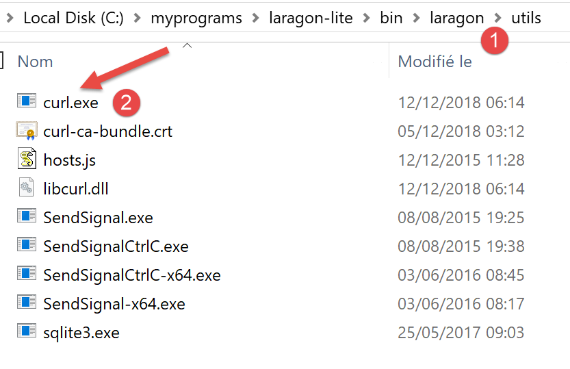
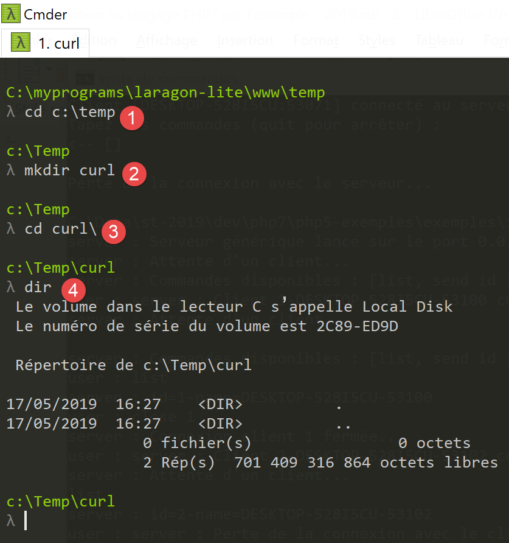
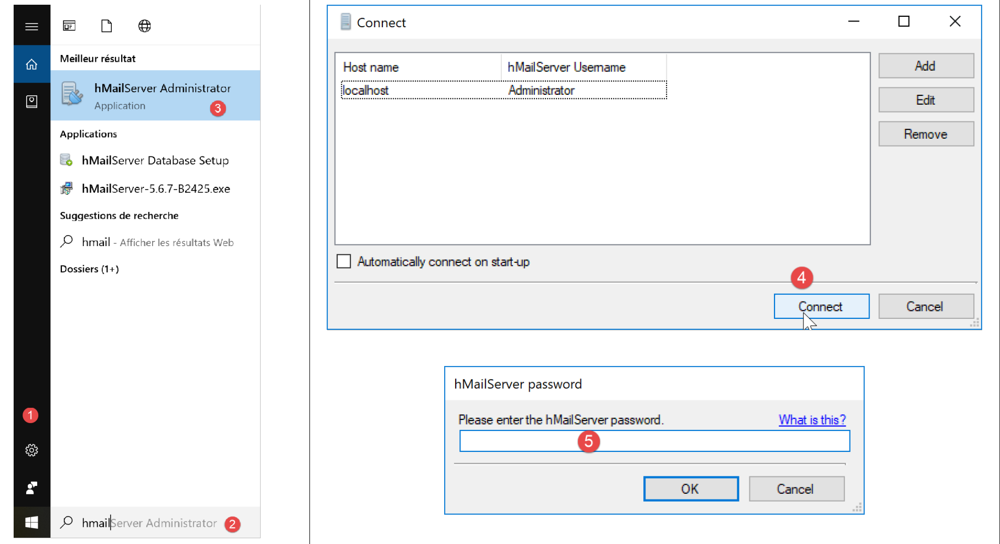
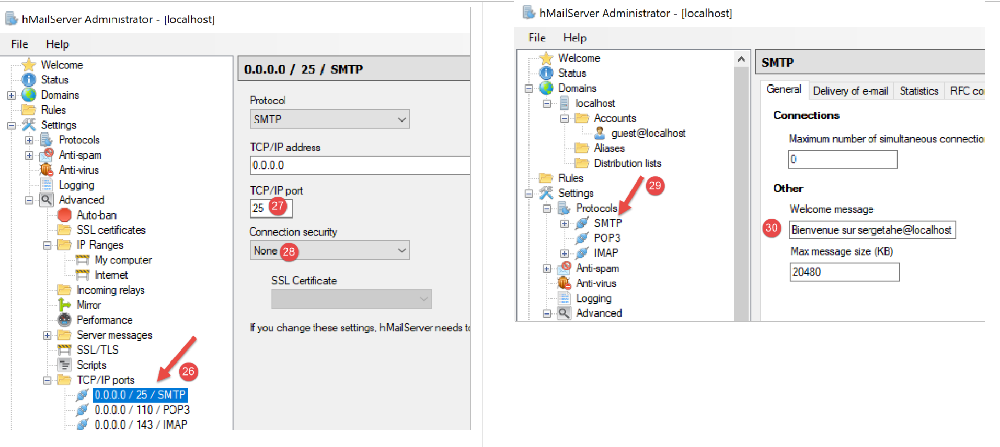
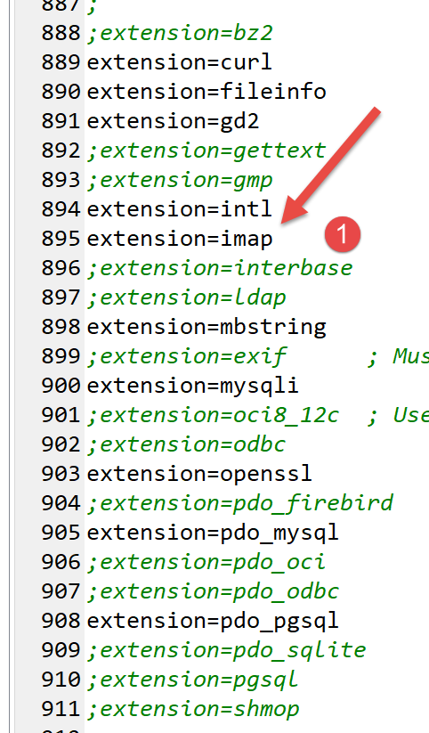
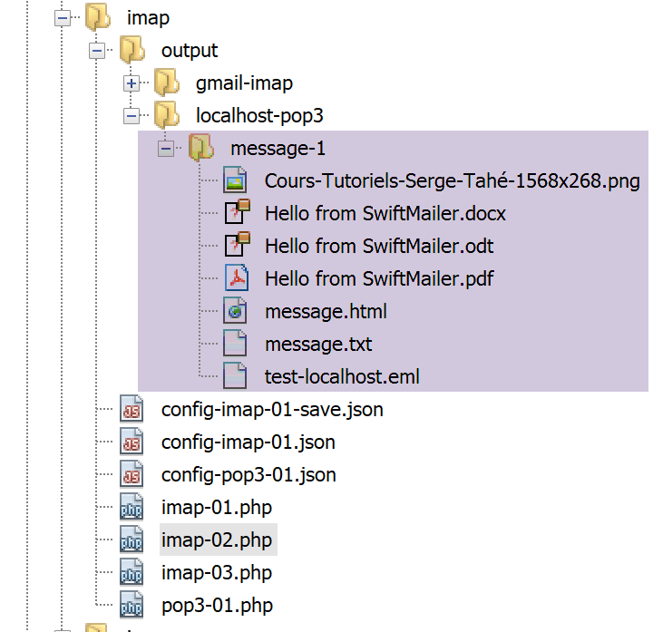
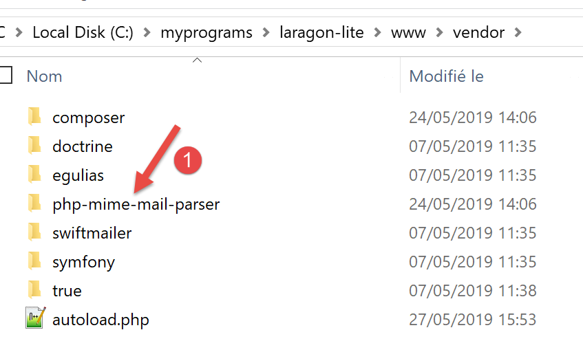
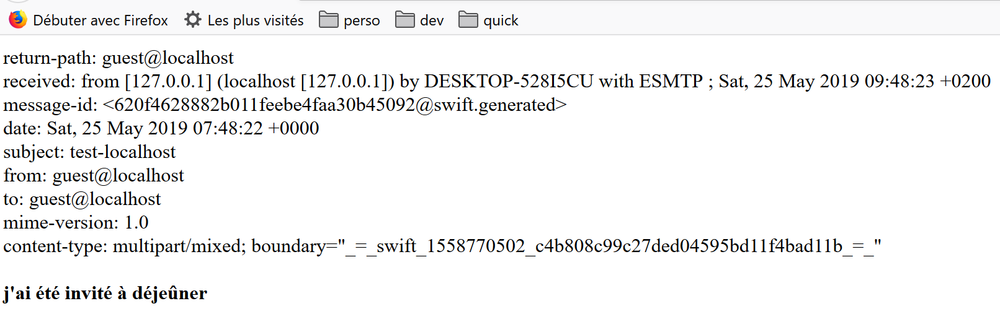

16. Network Functions
We will now discuss PHP’s network functions, which allow us to perform TCP/IP (Transmission Control Protocol/Internet Protocol) programming.

16.1. The basics of internet programming
16.1.1. General Overview
Consider communication between two remote machines, A and B:

When an application AppA on machine A wants to communicate with an application AppB on machine B on the Internet, it must know several things:
- the IP (Internet Protocol) address or the name of machine B;
- the port number used by application AppB. Indeed, machine B may host many applications running on the Internet. When it receives information from the network, it must know which application the information is intended for. The applications on machine B access the network through interfaces also known as communication ports. This information is contained in the packet received by machine B so that it can be delivered to the correct application;
- the communication protocols understood by machine B. In our study, we will use only TCP-IP protocols;
- the communication protocol supported by application AppB. Indeed, machines A and B will "communicate" with each other. What they exchange will be encapsulated within the TCP/IP protocols. However, when, at the end of the chain, the AppB application receives the information sent by the AppA application, it must be able to interpret it. This is analogous to the situation where two people, A and B, communicate by telephone: their conversation is carried by the telephone. Speech is encoded as a series of signals by phone A, transmitted over telephone lines, and arrives at phone B to be decoded. Person B then hears the speech. This is where the concept of a communication protocol comes into play: if A speaks French and B does not understand that language, A and B will not be able to communicate effectively;
Therefore, the two communicating applications must agree on the type of dialogue they will use. For example, the dialogue with an FTP service is not the same as with a POP service: these two services do not accept the same commands. They have a different dialogue protocol;
16.1.2. Characteristics of the TCP Protocol
Here, we will only examine network communications using the TCP transport protocol, whose main characteristics are as follows:
- The process wishing to transmit data first establishes a connection with the process that will receive the information it is about to transmit. This connection is established between a port on the sending machine and a port on the receiving machine. A virtual path is thus created between the two ports, which will be reserved exclusively for the two processes that have established the connection;
- All packets sent by the source process follow this virtual path and arrive in the order in which they were sent;
- the transmitted information appears continuous. The sending process sends information at its own pace. This information is not necessarily sent immediately: the TCP protocol waits until it has enough to send. It is stored in a structure called a TCP segment. Once this segment is full, it is transmitted to the IP layer, where it is encapsulated in an IP packet;
- Each segment sent by the TCP protocol is numbered. The receiving TCP protocol verifies that it is receiving the segments in sequence. For each segment received correctly, it sends an acknowledgment to the sender;
- when the sender receives this, it notifies the sending process. The sending process can thus confirm that a segment has arrived safely;
- if, after a certain amount of time, the TCP protocol that sent a segment does not receive an acknowledgment, it retransmits the segment in question, thereby ensuring the quality of the information delivery service;
- the virtual circuit established between the two communicating processes is full-duplex: this means that information can flow in both directions. Thus, the destination process can send acknowledgments even while the source process continues to send information. This allows, for example, the source TCP protocol to send multiple segments without waiting for an acknowledgment. If, after a certain amount of time, it realizes it has not received an acknowledgment for a specific segment No. n, it will resume sending segments from that point;
16.1.3. The client-server relationship
Communication over the Internet is often asymmetric: machine A initiates a connection to request a service from machine B, specifying that it wants to open a connection with service SB1 on machine B. Machine B either accepts or refuses. If it accepts, machine A can send its requests to service SB1. These requests must comply with the communication protocol understood by service SB1. A request-response dialogue is thus established between machine A, known as the client machine, and machine B, known as the server machine. One of the two partners will close the connection.
16.1.4. Client Architecture
The architecture of a network program requesting the services of a server application will be as follows:
open the connection to the SB1 service on machine B
if successful, then
as long as it is not finished
prepare a request
send it to machine B
wait and retrieve the response
process it
end while
end
close the connection
16.1.5. Server architecture
The architecture of a program offering services will be as follows:
open the service on the local machine
as long as the service is open
listen for connection requests on a port known as the listening port
when a request is received, have it processed by another task on a separate port known as the service port
end while
The server program handles a client’s initial connection request differently from its subsequent requests for service. The program does not provide the service itself. If it did, it would no longer be listening for connection requests while the service was in progress, and clients would not be served. It therefore proceeds differently: as soon as a connection request is received on the listening port and then accepted, the server creates a task responsible for providing the service requested by the client. This service is provided on another port of the server machine called the service port. This allows multiple clients to be served at the same time.
A service task will have the following structure:
until the service has been fully provided
wait for a request on the service port
when one is received, generate the response
transmit the response via the service port
end while
release the service port
16.2. Learn about Internet communication protocols
16.2.1. Introduction
When a client connects to a server, a dialogue is established between them. The nature of this dialogue constitutes what is known as the server’s communication protocol. Among the most common Internet protocols are the following:
- HTTP: HyperText Transfer Protocol – the protocol used to communicate with a web server (HTTP server);
- SMTP: Simple Mail Transfer Protocol – the protocol for communicating with an email sending server (SMTP server);
- POP: Post Office Protocol – the protocol for communicating with an email storage server (POP server). This is used to retrieve received emails, not to send them;
- IMAP: Internet Message Access Protocol – the protocol for communicating with an email storage server (IMAP server). This protocol has gradually replaced the older POP protocol;
- FTP: File Transfer Protocol—the protocol for communicating with a file storage server (FTP server);
All these protocols are text-based: the client and server exchange lines of text. If you have a client capable of:
- establish a connection with a TCP server;
- display the text lines sent by the server on the console;
- send the text lines that a user would type on the keyboard to the server;
then we are able to communicate with a TCP server using a text-based protocol, provided we know the rules of that protocol.
16.2.2. TCP Utilities

In the code associated with this document, there are two TCP communication utilities:
- [RawTcpClient] allows you to connect to port P of a server S;
- [RawTcpServer] creates a server that listens for clients on port P;
The TCP server [RawTcpServer] is called using the syntax [RawTcpServer port] to create a TCP service on port [port] of the local machine (the computer you are working on):
- the server can serve multiple clients simultaneously;
- the server executes commands typed by the user on the keyboard. These are as follows:
- list: lists the clients currently connected to the server. These are displayed in the format [id=x-name=y]. The [id] field is used to identify clients;
- send x [text]: sends text to client #x (id=x). The square brackets [] are not sent. They are required in the command. They are used to visually delimit the text sent to the client;
- close x: closes the connection with client #x;
- quit: closes all connections and stops the service;
- Lines sent by the client to the server are displayed on the console;
- All exchanges are logged in a text file named [machine-portService.txt], where
- [machine] is the name of the machine on which the code is running;
- [port] is the service port that responds to client requests;
The TCP client [RawTcpClient] is called using the syntax [RawTcpClient server port] to connect to port [port] on server [server]:
- lines typed by the user on the keyboard are sent to the server;
- the lines sent by the server are displayed on the console;
- All communication is logged in a text file named [server-port.txt];
Let's look at an example. Open two Windows Command Prompt windows and navigate to the utilities folder in each one. In one of the windows, start the [RawTcpServer] server on port 100:

- in [1], we are in the utilities folder;
- in [2], we start the TCP server on port 100;
- in [3], the server waits for a TCP client;
- in [4], the server waits for a command entered by the user via the keyboard;
In the other command window, we launch the TCP client:

- In [5], we are in the utilities folder;
- in [6], we launch the TCP client: we tell it to connect to port 100 on the local machine (the one you are working on);
- in [7], the client has successfully connected to the server. The client’s details are displayed: it is on the machine [DESKTOP-528I5CU] (the local machine in this example) and uses port [50405] to communicate with the server:
- In [8], the client is waiting for a command entered by the user via the keyboard;
Let’s return to the server window. Its contents have changed:

- In [9], a client has been detected. The server has assigned it the number 1. The server has correctly identified the remote client (machine and port);
- in [10], the server goes back to waiting for a new client;
Let’s return to the client window and send a command to the server:

- in [11], the command sent to the server;
Let’s return to the server window. Its contents have changed:

- in [12], in square brackets, the message received by the server;
Let’s send a response to the client:

- in [13], the response sent to client 1. Only the text between the brackets is sent, not the brackets themselves;
Let’s return to the client window:

- in [14], the response received by the client. The text received is the one between square brackets;
Let’s return to the server window to see other commands:

- in [15], we request the list of clients;
- in [16], the response;
- in [17], we close the connection with client #1;
- in [18], the server’s confirmation;
- in [19], we shut down the server;
- in [20], the server's confirmation;
Let’s return to the client window:

- in [21], the client has detected the end of the service;
Two log files have been created, one for the server and one for the client:

- in [25], the server logs: the file name is the client name [machine-port];
- in [26], the client logs: the file name is the server name [machine-port];
The server logs are as follows:
The client logs are as follows:
16.3. How to Find the Name or IP Address of a Computer on the Internet

Computers on the Internet are identified by an IP address (IPv4 or IPv6) and, more often than not, by a name. However, ultimately only the IP address is used. Therefore, it is sometimes necessary to know the IP address of a computer identified by its name.
The [ip-01.php] script is as follows:
<?php
// Strict adherence to the declared types of function parameters
declare (strict_types=1);
//
// error handling
error_reporting(E_ALL & E_STRICT);
ini_set("display_errors", "on");
//
// constants
$HOSTS = array("istia.univ-angers.fr", "www.univ-angers.fr", "www.ibm.com", "localhost", "", "xx");
// IP addresses and hostnames from $HOTES
for ($i = 0; $i < count($HOTES); $i++) {
getIPandName($HOTES[$i]);
}
// end
print "Done\n";
exit;
//------------------------------------------------
function getIPandName(string $machineName): void {
//$machineName: name of the machine whose IP address is wanted
//
// machineName --> IP address
$ip = gethostbyname($machineName);
print "---------------\n";
if ($ip !== $machineName) {
print "ip[$machineName]=$ip\n";
// IP address --> machineName
$name = gethostbyaddr($ip);
if ($name !== $ip) {
print "name[$ip]=$name\n";
} else {
print "Error, machine[$ip] not found\n";
}
} else {
print "Error, machine[$machineName] not found\n";
}
}
Comments
- lines 7-8: we instruct PHP to report all errors (E_ALL & E_STRICT) and display them. This mode is recommended only in development mode to improve the code using PHP warnings. In production mode, line 8, we would set it to "off". Since PHP 5.4, the E_STRICT level is included in E_ALL;
- Line 11: The list of machines for which we want the name and IP address;
PHP’s network functions are used in the getIpandName function on line 21.
- line 25: the gethostbyname($name) function retrieves the IP address "ip3.ip2.ip1.ip0" of the machine named $name. If the machine $name does not exist, the function returns $name as the result;
- Line 30: The gethostbyaddr($ip) function retrieves the machine name associated with the IP address $ip in the format "ip3.ip2.ip1.ip0". If the machine $ip does not exist, the function returns $ip as the result;
Results:
---------------
ip[istia.univ-angers.fr]=193.49.144.41
name[193.49.144.41]=ametys-fo-2.univ-angers.fr
---------------
ip[www.univ-angers.fr]=193.49.144.41
name[193.49.144.41]=ametys-fo-2.univ-angers.fr
---------------
ip[www.ibm.com]=2.18.220.211
name[2.18.220.211]=a2-18-220-211.deploy.static.akamaitechnologies.com
---------------
ip[localhost]=127.0.0.1
name[127.0.0.1]=DESKTOP-528I5CU
---------------
ip[]=192.168.1.38
name[192.168.1.38]=DESKTOP-528I5CU.home
---------------
Error, machine[xx] not found
Done
16.4. The HTTP (HyperText Transfer Protocol)
16.4.1. Example 1

When a browser displays a URL, it acts as the client of a web server, or in other words, an HTTP server. It takes the initiative and begins by sending a number of commands to the server. For this first example:
- the server will be the [RawTcpServer] utility;
- the client will be a browser;
First, we start the server on port 100:

Then, using a browser, we request the URL [localhost:100], meaning we specify that the HTTP server we’re querying is running on port 100 of the local machine:

Let’s return to the server window:

- in [3], the client that has connected;
- in [4-7], the series of text lines it sent:
- at [4]: this line has the format [GET URL HTTP/1.1]. It requests the URL / and instructs the server to use the HTTP 1.1 protocol;
- in [5]: this line has the format [Host: server:port]. The case of the [Host] command does not matter. Note that the client is querying a local server operating on port 100;
- the [User-Agent] command identifies the client;
- the [Accept] command specifies which document types are accepted by the client;
- the [Accept-Language] command specifies the language in which the requested documents are desired if they exist in multiple languages;
- the [Connection] command specifies the desired connection mode: [keep-alive] indicates that the connection must be maintained until the exchange is complete;
- in [7]: the client terminates its commands with a blank line;
We terminate the connection by shutting down the server:

16.4.2. Example 2
Now that we know the commands sent by a browser to request a URL, we will request this URL using our TCP client [RawTcpClient]. Laragon’s Apache server will be our web server.
Let’s launch Laragon and then the Apache web server:


Now, using a browser, let’s request the URL [http://localhost:80]. Here, we specify only the server [localhost:80] and no document URL. In this case, the URL / is requested, i.e., the root of the web server:

- in [1], the requested URL. We initially typed [http://localhost:80], and the browser (Firefox here) simply converted it to [localhost] because the [http] protocol is implied when no protocol is specified, and port [80] is implied when the port is not specified;
- in [2], the root page / of the queried web server;
Now, let's view the text received by the browser:

- Right-click on the page and select option [2]. You will see the following source code:
<!DOCTYPE HTML>
<HTML>
<head>
<title>Laragon</title>
<link href="https://fonts.googleapis.com/css?family=Karla:400 " rel="stylesheet" type="text/css">
<style>
HTML, body {
height: 100%;
}
body {
margin: 0;
padding: 0;
width: 100%;
display: table;
font-weight: 100;
font-family: 'Karla';
}
.container {
text-align: center;
display: table-cell;
vertical-align: middle;
}
.content {
text-align: center;
display: inline-block;
}
.title {
font-size: 96px;
}
.opt {
margin-top: 30px;
}
.opt a {
text-decoration: none;
font-size: 150%;
}
a:hover {
color: red;
}
</style>
</head>
<body>
<div class="container">
<div class="content">
<div class="title" title="Laragon">Laragon</div>
<div class="info"><br />
Apache/2.4.35 (Win64) OpenSSL/1.1.0i PHP/7.2.11<br />
PHP version: 7.2.11 <span><a title="phpinfo()" href="/?q=info">info</a></span><br />
Document Root: C:/myprograms/laragon-lite/www<br />
</div>
<div class="opt">
<div><a title="Getting Started" href="https://laragon.org/docs ">Getting Started</a></div>
</div>
</div>
</div>
</body>
</HTML>
Now let’s request the URL [http://localhost:80] using our TCP client:

- In [1], we connect to port 80 on the localhost server. This is where the Laragon web server runs;
Now we type the commands we discovered in the previous paragraph:

- in [1], the [GET] command. We request the root directory / of the web server;
- in [2], the [Host] command;
- these are the only two essential commands. For the other commands, the web server will use default values;
- in [3], the blank line that must end the client commands;
- below line 3 comes the web server’s response;
- in [4] up to the blank line [5] are the HTTP headers of the server’s response;
- after line [5] comes the requested HTML document [6];
We type [quit] to exit the client and download the log file [localhost-80.txt]:
- Lines 11–79: the received HTML document. In the previous example, Firefox received the same one;
We now have the basics to program a TCP client that would request a URL.
16.4.3. Example 3

The script [http-01.php] is an HTTP client configured by the JSON file [config-http-01.json]. The contents of the file are as follows:
- line 2: the name of the machine hosting the web server to be reached;
- line 3: the port on which this web server operates;
- line 4: the URL of the desired document;
- line 5: the target machine in the format machine:port;
- line 6: the HTTP client’s identification: you can enter whatever you want;
- line 7: the document type accepted by the client, in this case HTML text;
- line 8: the desired language for the requested document;
- line 9: the line-ending character for commands sent by the client: this may differ depending on whether the server is running on a Unix machine (\n) or a Windows machine (\r\n);
The [http-01.php] script is as follows:
<?php
// Strict adherence to the declared types of function parameters
declare (strict_types=1);
//
// error handling
// error_reporting(E_ALL & E_STRICT);
// ini_set("display_errors", "on");
//
// constants
const CONFIG_FILE_NAME = "config-http-01.json";
//
// retrieve the configuration
$config = \json_decode(\file_get_contents(CONFIG_FILE_NAME), true);
// get the HTML text from the URLs in the configuration file
foreach ($config as $site => $protocol) {
// read the index page of the $site site
$result = getURL($site, $protocol);
// display result
print "$result\n";
}//for
// end
exit;
//-----------------------------------------------------------------------
function getURL(string $site, array $protocol, $track = TRUE): string {
// reads the URL $site["GET"] and stores it in the file $site.HTML
// the client/server communication follows the $protocole protocol
//
// opens a connection on the $site port
$errorNumber = 0;
$error = "";
$connection = fsockopen($site, $protocol["port"], $errorNumber, $error);
// return if error
if ($connection === FALSE) {
return "Failed to connect to the site (" . $site . " ," . $protocol["port"] . " : $error";
}
// $connection represents a bidirectional communication stream
// between the client (this program) and the contacted web server
// this channel is used for exchanging commands and information
// The communication protocol is HTTP
//
// Create the $site.HTML file
$HTML = fopen("output/$site.HTML", "w");
if ($HTML === FALSE) {
// Close client/server connection
fclose($connection);
// return error
return "Error creating the $site.HTML file";
}
// The client will initiate the HTTP connection with the server
if ($tracking) {
print "Client: starting communication with the server [$site] ----------------------------\n";
}
// Depending on the server, client lines must end with \n or \r\n
$endOfLine = $protocol["endOfLine"];
// For simplicity, we do not check for errors in client/server communication
// the client sends the GET request to request the URL $protocol["GET"]
// GET syntax: HTTP/1.1
$command = "GET " . $protocol["GET"] . " HTTP/1.1$endOfLine";
// follow-up?
if ($follow) {
print "--> $command";
}
// send the command to the server
fputs($connection, $command);
// send the other HTTP headers
foreach ($protocol as $verb => $value) {
if ($verb !== "GET" && $verb != "port" && $verb !="endOfLine") {
// build the command
$command = "$verb: $value$endOfLine";
// Is there a follow-up?
if ($follow) {
print "--> $command";
}
// send the command to the server
fputs($connection, $command);
}
}
// HTTP headers must end with an empty line
fputs($connection, $endOfLine);
//
// The server will now respond on the $connection channel. It will send all
// its data and then close the channel. The client therefore reads everything coming from $connection
// until the channel is closed
//
// First, we read the HTTP headers sent by the server
// they also end with an empty line
if ($follow) {
print "Response from the server [$site] ----------------------------\n";
}
$finished = FALSE;
while (!$finished && $line = fgets($connection, 1000)) {
// Is there an empty line?
$fields = [];
preg_match("/^(.*?)\s+$/", $line, $fields);
if ($fields[1] !== "") {
if ($tracking) {
// display the HTTP header
print "<-- " . $fields[1] . "\n";
}
} else {
// this was the empty line - the HTTP headers are finished
$finished = TRUE;
}
}
// read the HTML document that follows the empty line
while ($line = fgets($connection, 1000)) {
// store the line in the site's HTML file
fputs($HTML, $line);
}
// the server has closed the connection - the client closes it in turn
fclose($connection);
// Close the $HTML file
fclose($HTML);
// return
return "Communication with the site [$site] has ended. Check the file [$site.HTML]";
}
Code comments:
- line 14: the configuration file is used to create a dictionary:
- the dictionary keys are the web servers to query;
- the values specify the HTTP protocol to use;
- lines 16–21: we loop through the list of web servers in the configuration;
- Line 26: The getURL($site, $protocol, $log) function retrieves a document from the $site website and saves it to the text file $site.HTML. By default, client/server interactions are logged to the console ($log=TRUE);
- Line 33: The fsockopen($site,$port,$errNumber,$error) function creates a connection with a TCP/IP service running on port $port on the $site machine. If the connection fails, [$errNumber] is an error code and [$error] is the associated error message. Once the client/server connection is open, many TCP/IP services exchange lines of text. This is the case here with the HTTP (HyperText Transfer Protocol). The data stream from the server to the client can then be treated as a text file read using [fgets]. The same applies to the data stream from the client to the server, which can be written using [fputs];
- lines 44–50: creation of the file [$site.HTML] in which the received HTML document will be stored;
- line 60: the client’s first command must be [GET URL HTTP/1.1];
- line 66: the fputs function allows the client to send data to the server. Here, the text line sent has the following meaning: "I want (GET) the [URL] page of the website I am connected to. I am using HTTP version 1.1";
- lines 68–79: the other HTTP protocol lines [Host, User-Agent, Accept, Accept-Language] are sent. Their order does not matter;
- Line 81: An empty line is sent to the server to indicate that the client has finished sending its HTTP headers and is now waiting for the requested document;
- lines 92–106: The server will first send a series of HTTP headers that provide various details about the requested document. These headers end with an empty line;
- line 93: a line sent by the server is read using the PHP function [fgets];
- line 96: we retrieve the body of the line without the spaces (whitespace, end-of-line characters) at the end of the line;
- line 97: we check if we have retrieved the empty line that marks the end of the HTTP headers sent by the server;
- lines 98–101: if in [trace] mode, the received HTTP header is displayed in the console;
- lines 108–111: the text lines of the server’s response can be read line by line using a while loop and saved to the text file [output/$site.HTML]. When the web server has sent the entire page requested, it closes its connection with the client. On the client side, this will be detected as an end-of-file;
Results:
The console displays the following logs:
Client: Start of communication with the server [localhost] ----------------------------
--> GET / HTTP/1.1
--> Host: localhost:80
--> User-Agent: PHP client
--> Accept: text/HTML
--> Accept-Language: fr
Response from server [localhost] ----------------------------
<-- HTTP/1.1 200 OK
<-- Date: Thu, May 16, 2019 3:43:18 PM GMT
<-- Server: Apache/2.4.35 (Win64) OpenSSL/1.1.0i PHP/7.2.11
<-- X-Powered-By: PHP/7.2.11
<-- Content-Length: 1781
<-- Content-Type: text/HTML; charset=UTF-8
End of communication with the [localhost] site. Check the [localhost.HTML] file
In our example, the received [output/localhost.HTML] file is as follows:
<!DOCTYPE HTML>
<HTML>
<head>
<title>Laragon</title>
<link href="https://fonts.googleapis.com/css?family=Karla:400" rel="stylesheet" type="text/css">
<style>
HTML, body {
height: 100%;
}
body {
margin: 0;
padding: 0;
width: 100%;
display: table;
font-weight: 100;
font-family: 'Karla';
}
.container {
text-align: center;
display: table-cell;
vertical-align: middle;
}
.content {
text-align: center;
display: inline-block;
}
.title {
font-size: 96px;
}
.opt {
margin-top: 30px;
}
.opt a {
text-decoration: none;
font-size: 150%;
}
a:hover {
color: red;
}
</style>
</head>
<body>
<div class="container">
<div class="content">
<div class="title" title="Laragon">Laragon</div>
<div class="info"><br />
Apache/2.4.35 (Win64) OpenSSL/1.1.0i PHP/7.2.11<br/>
PHP version: 7.2.11 <span><a title="phpinfo()" href="/?q=info">info</a></span><br />
Document Root: C:/myprograms/laragon-lite/www<br/>
</div>
<div class="opt">
<div><a title="Getting Started" href="https://laragon.org/docs">Getting Started</a></div>
</div>
</div>
</div>
</body>
</HTML>
We did indeed get the same document as with the Firefox browser.
16.4.4. Example 4
In this example, we will demonstrate that the HTTP client we wrote is insufficient. Modify the configuration file [config-http-01.json] as follows:
Here, we will request the URL [http://tahe.developpez.com:443/]. Port 443 on the machine [tahe.developpez.com] is a port used for the secure HTTP protocol known as HTTPS. In this protocol, the client-server interaction begins with an exchange of information that secures the connection. The client must therefore use the [HTTPS] protocol rather than the [HTTP] protocol, which our client does not do.
With this configuration file, the console output is as follows:
Client: Starting communication with the server [tahe.developpez.com] ----------------------------
--> GET / HTTP/1.1
--> Host: sergetahe.com:443
--> User-Agent: PHP 7 script
--> Accept: text/HTML
--> Accept-Language: fr
Server response [tahe.developpez.com] ----------------------------
<-- HTTP/1.1 400 Bad Request
<-- Date: Fri, May 17, 2019 1:02:26 PM GMT
<-- Server: Apache/2.4.25 (Debian)
<-- Content-Length: 454
<-- Connection: close
<-- Content-Type: text/HTML; charset=iso-8859-1
End of communication with the site [tahe.developpez.com]. Check the file [output/tahe.developpez.com.HTML]
- line 8: the server [tahe.developpez.com] responded that the client's request was incorrect;
The content of the file [output/tahe.developpez.com.HTML] is as follows:
<!DOCTYPE HTML PUBLIC "-//IETF//DTD HTML 2.0//EN">
<HTML><head>
<title>400 Bad Request</title>
</head><body>
<h1>Bad Request</h1>
<p>Your browser sent a request that this server could not understand.<br />
Reason: You're using plain HTTP on an SSL-enabled server port.<br/>
Please use the HTTPS scheme to access this URL instead.<br/>
</p>
<hr>
<address>Apache/2.4.25 (Debian) Server at 2eurocents.developpez.com Port 443</address>
</body></HTML>
The server clearly states that we did not use the correct protocol.
Now let’s use the following configuration file:
The console output is as follows:
Client: Start of communication with the server [sergetahe.com] ----------------------------
--> GET /programming-tutorials/ HTTP/1.1
--> Host: sergetahe.com:80
--> User-Agent: PHP 7 script
--> Accept: text/HTML
--> Accept-Language: fr
Server response [sergetahe.com] ----------------------------
<-- HTTP/1.1 200 OK
<-- Date: Fri, May 17, 2019 1:36:06 PM GMT
<-- Content-Type: text/HTML; charset=UTF-8
<-- Transfer-Encoding: chunked
<-- Server: Apache
<-- X-Powered-By: PHP/7.0
<-- Vary: Accept-Encoding
<-- Set-Cookie: SERVERID68971=2621207|XN64y|XN64y; path=/
<-- Cache-control: private
<-- X-IPLB-Instance: 17106
Communication with the site [sergetahe.com] has ended. Check the file [output/sergetahe.com.HTML]
- Line 11 indicates that the server is sending the document in chunks;
This results in numbers appearing in the data stream sent to the client: each number tells the client the number of characters in the next chunk sent by the server. Here is what it looks like in the file [output/sergetahe.com.HTML]:

- [1] and [2] represent the hexadecimal size of chunks 1 and 2 of the document;
A proper HTTP client should not leave these numbers in the final HTML document.
Here is another example:
It resembles the previous example, but the URL requested on line 4 does not end with a /. These are not the same URLs. Executing the HTTP client then produces the following console output:
Client: starting communication with the server [sergetahe.com] ----------------------------
--> GET /programming-tutorials HTTP/1.1
--> Host: sergetahe.com:80
--> User-Agent: PHP 7 script
--> Accept: text/HTML
--> Accept-Language: fr
Server response [sergetahe.com] ----------------------------
<-- HTTP/1.1 301 Moved Permanently
<-- Date: Fri, May 17, 2019 1:47:00 PM GMT
<-- Content-Type: text/HTML; charset=iso-8859-1
<-- Content-Length: 262
<-- Server: Apache
<-- Location: http://sergetahe.com:80/cours-tutoriels-de-programmation/
<-- Set-Cookie: SERVERID68971=2621207|XN67V|XN67V; path=/
<-- Cache-control: private
<-- X-IPLB-Instance: 17095
End of communication with the site [sergetahe.com]. Check the file [output/sergetahe.com.HTML]
- Line 8 indicates that the requested document has changed its URL. The new URL is given on line 13. Note this time the / character that ends the new URL;
The file [output/serge.tahe.com.HTML] is then as follows:
<!DOCTYPE HTML PUBLIC "-//IETF//DTD HTML 2.0//EN">
<HTML><head>
<title>301 Moved Permanently</title>
</head><body>
<h1>Moved Permanently</h1>
<p>The document has moved <a href="http://sergetahe.com/cours-tutoriels-de-programmation/">here</a>.</p>
</body></HTML>
An HTTP client should be able to follow redirects. In this case, it should automatically request the new URL [http://sergetahe.com/cours-tutoriels-de-programmation/].
16.4.5. Example 5
The previous examples showed us that our HTTP client was insufficient. We will now introduce a tool called [curl] that allows you to retrieve web documents while handling the challenges mentioned: HTTPS protocol, documents sent in chunks, redirects… The [curl] tool was installed with Laragon:

Let’s open a Laragon terminal [1]:

In the terminal, type the following command:

- in [1], the console type;
- in [2], the current directory. This directory is special: it’s where Laragon’s Apache server retrieves the documents requested of it. We’ll therefore avoid cluttering this directory;
- in [3], the command entered;
The [curl --help] command may produce an error. The most likely cause is that you do not have the correct terminal type. In this case, open another terminal with commands [4-6];
The [curl --help] command displays all of [curl]’s configuration options. There are dozens of them. We will use very few of them. To request a URL, simply type the command [curl URL]. This command will display the requested document on the console. If you also want to see the HTTP exchanges between the client and the server, type [curl --verbose URL]. Finally, to save the requested HTML document to a file, type [curl --verbose --output file URL].
To avoid cluttering Laragon’s [www] folder, let’s move to another location in the file system:

- in [1], navigate to the [c:\temp] folder. If this folder does not exist, you can create it or choose another one;
- in [2], create a folder named [curl];
- in [3], navigate to it;
- in [4], list its contents. It is empty;
Make sure the Laragon Apache server is running, and using [curl], request the URL [http://localhost/] with the command [curl –verbose –output localhost.HTML http://localhost/]. You get the following results:
c:\Temp\curl
λ curl --verbose --output localhost.HTML http://localhost/
% Total % Received % Xferd Average Speed Time Time Time Current
Dload Upload Total Spent Left Speed
0 0 0 0 0 0 0 0 --:--:-- --:--:-- --:--:-- 0* Trying ::1…
* TCP_NODELAY set
* Connected to localhost (::1) port 80 (#0)
> GET / HTTP/1.1
> Host: localhost
> User-Agent: curl/7.63.0
> Accept: */*
>
< HTTP/1.1 200 OK
< Date: Fri, May 17, 2019 2:32:47 PM GMT
< Server: Apache/2.4.35 (Win64) OpenSSL/1.1.0i PHP/7.2.11
< X-Powered-By: PHP/7.2.11
< Content-Length: 1781
< Content-Type: text/HTML; charset=UTF-8
<
{ [1781 bytes of data]
100 1781 100 1781 0 0 14248 0 --:--:-- --:--:-- --:--:-- 14248
* Connection #0 to host localhost left intact
- lines 8-12: lines sent by [curl] to the [localhost] server. The HTTP protocol is recognized;
- lines 13–19: lines sent in response by the server;
- line 13: indicates that the requested document was successfully received;
The [localhost.HTML] file contains the requested document. You can verify this by opening the file in a text editor.
Now let’s request the URL [https://tahe.developpez.com:443/]. To retrieve this URL, the HTTP client must support HTTPS. This is the case with the [curl] client.
The console output is as follows:
c:\Temp\curl
λ curl --verbose --output tahe.developpez.com.HTML https://tahe.developpez.com:443/
% Total % Received % Xferd Average Speed Time Time Time Current
Dload Upload Total Spent Left Speed
0 0 0 0 0 0 0 0 --:--:-- --:--:-- --:--:-- 0* Trying 87.98.130.52…
* TCP_NODELAY set
* Connected to tahe.developpez.com (87.98.130.52) port 443 (#0)
* ALPN, offering h2
* ALPN, offering http/1.1
* successfully set certificate verify locations:
* CAfile: C:\myprograms\laragon-lite\bin\laragon\utils\curl-ca-bundle.crt
CApath: none
} [5 bytes data]
* TLSv1.3 (OUT), TLS handshake, Client hello (1):
} [512 bytes data]
* TLSv1.3 (IN), TLS handshake, Server hello (2):
{ [108 bytes data]
* TLSv1.2 (IN), TLS handshake, Certificate (11):
{ [2558 bytes of data]
* TLSv1.2 (IN), TLS handshake, Server key exchange (12):
{ [333 bytes of data]
* TLSv1.2 (IN), TLS handshake, Server finished (14):
{ [4 bytes data]
* TLSv1.2 (OUT), TLS handshake, Client key exchange (16):
} [70 bytes of data]
* TLSv1.2 (OUT), TLS change cipher, Change cipher spec (1):
} [1 byte of data]
* TLSv1.2 (OUT), TLS handshake, Finished (20):
} [16 bytes of data]
* TLSv1.2 (IN), TLS handshake, Finished (20):
{ [16 bytes data]
* SSL connection using TLSv1.2 / ECDHE-RSA-AES128-GCM-SHA256
* ALPN, server agreed to use HTTP/1.1
* Server certificate:
* subject: CN=*.developpez.com
* start date: Apr 4 08:25:09 2019 GMT
* expiration date: Jul 3 08:25:09 2019 GMT
* subjectAltName: host "tahe.developpez.com" matched cert's "*.developpez.com"
* issuer: C=US; O=Let's Encrypt; CN=Let's Encrypt Authority X3
* SSL certificate verified successfully.
} [5 bytes data]
> GET / HTTP/1.1
> Host: tahe.developpez.com
> User-Agent: curl/7.63.0
> Accept: */*
>
{ [5 bytes of data]
< HTTP/1.1 200 OK
< Date: Fri, May 17, 2019 2:39:41 PM GMT
< Server: Apache/2.4.25 (Debian)
< X-Powered-By: PHP/5.3.29
< Vary: Accept-Encoding
< Transfer-Encoding: chunked
< Content-Type: text/HTML
<
{ [6 bytes of data]
100 96559 0 96559 0 0 163k 0 --:--:-- --:--:-- --:--:-- 163k
* Connection #0 to host tahe.developpez.com left intact
- lines 10–40: client/server exchanges to secure the connection: this will be encrypted;
- lines 42-45: the HTTP headers sent by the client [curl] to the server;
- line 48: the requested document was found;
- line 53: the document is sent in chunks;
[curl] correctly handles both the secure HTTPS protocol and the fact that the document is sent in chunks. The sent document can be found here in the file [tahe.developpez.com.HTML].
Now let’s request the URL [http://sergetahe.com/cours-tutoriels-de-programmation]. We saw that for this URL, there was a redirect to the URL [http://sergetahe.com/cours-tutoriels-de-programmation/] (with a / at the end).
The console output is as follows:
c:\Temp\curl
λ curl --verbose --output sergetahe.com.HTML --location http://sergetahe.com/cours-tutoriels-de-programmation
% Total % Received % Xferd Average Speed Time Time Time Current
Dload Upload Total Spent Left Speed
0 0 0 0 0 0 0 0 --:--:-- --:--:-- --:--:-- 0* Trying 87.98.154.146…
* TCP_NODELAY set
* Connected to sergetahe.com (87.98.154.146) port 80 (#0)
> GET /programming-tutorials HTTP/1.1
> Host: sergetahe.com
> User-Agent: curl/7.63.0
> Accept: */*
>
< HTTP/1.1 301 Moved Permanently
< Date: Fri, May 17, 2019 3:13:03 PM GMT
< Content-Type: text/HTML; charset=iso-8859-1
< Content-Length: 262
< Server: Apache
< Location: http://sergetahe.com/cours-tutoriels-de-programmation/
< Set-Cookie: SERVERID68971=2621207|XN7Pg|XN7Pg; path=/
< Cache-control: private
< X-IPLB-Instance: 17095
<
* Ignoring the response body
{ [262 bytes of data]
100 262 100 262 0 0 1401 0 --:--:-- --:--:-- --:--:-- 1401
* Connection #0 to host sergetahe.com remains open
* Send another request to this URL: 'http://sergetahe.com/cours-tutoriels-de-programmation/'
* Found bundle for host sergetahe.com: 0x1c88548 [can pipeline]
* Could pipeline, but not asked to!
* Re-using existing connection! (#0) with host sergetahe.com
* Connected to sergetahe.com (87.98.154.146) port 80 (#0)
0 0 0 0 0 0 0 0 --:--:-- --:--:-- --:--:-- 0
> GET /programming-tutorials/ HTTP/1.1
> Host: sergetahe.com
> User-Agent: curl/7.63.0
> Accept: */*
>
< HTTP/1.1 200 OK
< Date: Fri, May 17, 2019 3:13:04 PM GMT
< Content-Type: text/HTML; charset=UTF-8
< Transfer-Encoding: chunked
< Server: Apache
< X-Powered-By: PHP/7.0
< Vary: Accept-Encoding
< Set-Cookie: SERVERID68971=2621207|XN7Pg|XN7Pg; path=/
< Cache-control: private
< X-IPLB-Instance: 17095
<
{ [14205 bytes of data]
100 43101 0 43101 0 0 78795 0 --:--:-- --:--:-- --:--:-- 168k
* Connection #0 to host sergetahe.com left intact
- line 2: the [--location] option is used to indicate that we want to follow redirects sent by the server;
- line 13: the server indicates that the requested document has changed its URL;
- line 18: it indicates the new URL of the requested document;
- line 27: [curl] sends a new request to the new URL;
- line 33: the new URL is used;
- line 38: the server responds that it has found the requested document;
- line 41: it sends it in chunks;
The requested document will be found in the file [sergetahe.com.HTML].
16.4.6. Example 6
PHP has an extension called [libcurl] that allows you to use the capabilities of the [curl] tool in a PHP program. First, make sure this extension is enabled in the [php.ini] file described in the link section:

Make sure that line 889 above is uncommented.
We will write a script [http-02.php] that will use the following JSON configuration file:
Each [key, value] entry in the dictionary has the following structure:
- key: the name of a web server;
- value is a dictionary with the following keys:
- timeout: maximum wait time for the server’s response. After this time, the client will disconnect;
- url: URL of the requested document;
The script code [http-02.php] is as follows:
<?php
// Strict adherence to the declared types of function parameters
declare (strict_types=1);
//
// error handling
//error_reporting(E_ALL & E_STRICT);
//ini_set("display_errors", "on");
//
// constants
const CONFIG_FILE_NAME = "config-http-02.json";
//
// retrieve the configuration
$config = \json_decode(\file_get_contents(CONFIG_FILE_NAME), true);
// get the HTML text from the URLs in the configuration file
foreach ($config as $site => $info) {
// read the URL of the $site site
$result = getUrl($site, $info["url"], $info["timeout"]);
// display result
print "$result\n";
}//for
// end
exit;
//-----------------------------------------------------------------------
function getUrl(string $site, string $url, int $timeout, $tracking = TRUE): string {
// Reads the URL $url and saves it to the file output/$site.HTML
//
// monitoring
print "Client: starting communication with the server [$site] ----------------------------\n";
// Initialize a cURL session
$curl = curl_init($url);
if ($curl === FALSE) {
// An error occurred
return "Error initializing the cURL session for the site [$site]";
}
// curl options
$options = [
// verbose mode
CURLOPT_VERBOSE => true,
// new connection - no cache
CURLOPT_FRESH_CONNECT => true,
// request timeout (in seconds)
CURLOPT_TIMEOUT => $timeout,
CURLOPT_CONNECTTIMEOUT => $timeout,
// do not verify SSL certificate validity
CURLOPT_SSL_VERIFYPEER => false,
// follow redirects
CURLOPT_FOLLOWLOCATION => true,
// retrieve the requested document as a string
CURLOPT_RETURNTRANSFER => true
];
// configure curl
curl_setopt_array($curl, $options);
// Execute the request
$page_content = curl_exec($curl);
// Close the cURL session
curl_close($curl);
// process the result
if ($page_content !== FALSE) {
// save the result to $site.HTML
$result = file_put_contents("output/$site.HTML", $page_content);
if ($result === FALSE) {
// return error
return "Error creating the file [output/$site.HTML]";
}
// return successfully
return "Connection to the [$site] server has ended. Check the file [output/$site.HTML]";
} else {
// A communication error occurred
return "Error communicating with the server [$site]";
}
}
Comments
- line 14: we use the configuration file to create the dictionary [$config];
- lines 17–22: we loop through the list of sites found in the configuration;
- line 19: for each site, we call the [getUrl] function, which will download the URL $infos["url"] with a timeout of $infos["timeout"];
- line 34: we start a [curl] session. [curl_init] does not yet connect to the web server. It returns a resource [$curl] that will be a parameter for all subsequent [curl] functions;
- lines 35–38: if the [curl] session initialization fails, the [curl_init] function returns the boolean FALSE;
- lines 40–54: the dictionary [$options] configures the [curl] connection to the server;
- line 57: the connection options are passed to the [$curl] resource;
- line 59: connects to the requested URL with the defined options. Because of the option [CURLOPT_RETURNTRANSFER => true], the [curl_exec] function returns the document sent by the server as a string. The [curl_exec] function returns FALSE if the connection fails;
- Line 64: We parse the result of [curl_exec];
- line 66: the received page is saved to a local file;
- lines 69, 72, 75: the result of the [getUrl] function is returned;
When running the [http-02.php] script, the following console output is displayed:
* Rebuilt URL to: http://sergetahe.com/
Client: starting communication with the server [sergetahe.com] ----------------------------
* Trying 87.98.154.146…
* TCP_NODELAY set
* Connected to sergetahe.com (87.98.154.146) port 80 (#0)
> GET / HTTP/1.1
Host: sergetahe.com
Accept: */*
< HTTP/1.1 302 Found
< Date: Sat, May 18, 2019 08:46:38 GMT
< Content-Type: text/HTML; charset=UTF-8
< Transfer-Encoding: chunked
< Server: Apache
< X-Powered-By: PHP/7.0
< Location: http://sergetahe.com/cours-tutoriels-de-programmation
< Set-Cookie: SERVERID68971=2621236|XN/Gc|XN/Gc; path=/
< X-IPLB-Instance: 17097
<
* Ignoring the response body
* Connection #0 to host sergetahe.com left intact
* Sending another request to this URL: 'http://sergetahe.com/cours-tutoriels-de-programmation'
* Found bundle for host sergetahe.com: 0x1fee4ebe090 [can pipeline]
* Reusing existing connection! (#0) with host sergetahe.com
* Connected to sergetahe.com (87.98.154.146) port 80 (#0)
> GET /programming-tutorials HTTP/1.1
Host: sergetahe.com
Accept: */*
< HTTP/1.1 301 Moved Permanently
< Date: Sat, May 18, 2019 08:46:38 GMT
< Content-Type: text/HTML; charset=iso-8859-1
< Content-Length: 262
< Server: Apache
< Location: http://sergetahe.com/cours-tutoriels-de-programmation/
< Set-Cookie: SERVERID68971=2621236|XN/Gc|XN/Gc; path=/
< Cache-control: private
< X-IPLB-Instance: 17097
<
* Ignoring the response body
* Connection #0 to host sergetahe.com left intact
* Send another request to this URL: 'http://sergetahe.com/cours-tutoriels-de-programmation/'
* Found bundle for host sergetahe.com: 0x1fee4ebe090 [can pipeline]
* Reusing existing connection! (#0) with host sergetahe.com
* Connected to sergetahe.com (87.98.154.146) port 80 (#0)
> GET /programming-tutorials/ HTTP/1.1
Host: sergetahe.com
Accept: */*
< HTTP/1.1 200 OK
< Date: Sat, May 18, 2019 08:46:39 GMT
< Content-Type: text/HTML; charset=UTF-8
< Transfer-Encoding: chunked
< Server: Apache
< X-Powered-By: PHP/7.0
< Link: <http://sergetahe.com/cours-tutoriels-de-programmation/wp-json/>; rel="https://api.w.org/"
< Link: <http://sergetahe.com/cours-tutoriels-de-programmation/>; rel=shortlink
< Vary: Accept-Encoding
< Set-Cookie: SERVERID68971=2621236|XN/Gc|XN/Gc; path=/
< Cache-control: private
< X-IPLB-Instance: 17097
<
End of communication with the server [sergetahe.com]. Check the file [output/sergetahe.com.HTML]
Client: Start of communication with server [tahe.developpez.com] ----------------------------
* Connection #0 to host sergetahe.com remains active
* Rebuilt URL to: https://tahe.developpez.com/
* Trying 87.98.130.52…
* TCP_NODELAY set
* Connected to tahe.developpez.com (87.98.130.52) port 443 (#0)
* ALPN, offering http/1.1
* Certificate verification locations successfully set:
* CAfile: C:\myprograms\laragon-lite\etc\ssl\cacert.pem
CApath: none
* SSL connection using TLSv1.2 / ECDHE-RSA-AES128-GCM-SHA256
* ALPN, server accepted to use HTTP/1.1
* Server certificate:
* subject: CN=*.developpez.com
* start date: Apr 4 08:25:09 2019 GMT
* expiration date: Jul 3 08:25:09 2019 GMT
* subjectAltName: host "tahe.developpez.com" matched cert's "*.developpez.com"
* issuer: C=US; O=Let's Encrypt; CN=Let's Encrypt Authority X3
* SSL certificate verified successfully.
> GET / HTTP/1.1
Host: tahe.developpez.com
Accept: */*
< HTTP/1.1 200 OK
< Date: Sat, May 18, 2019 08:46:42 GMT
< Server: Apache/2.4.25 (Debian)
< X-Powered-By: PHP/5.3.29
< Vary: Accept-Encoding
< Transfer-Encoding: chunked
< Content-Type: text/HTML
<
End of communication with the server [tahe.developpez.com]. Check the file [output/tahe.developpez.com.HTML]
Client: Start of communication with the server [www.polytech-angers.fr] ----------------------------
* Connection #0 to host tahe.developpez.com remains open
* Rebuilt URL to: http://www.polytech-angers.fr/
* Trying 193.49.144.41…
* TCP_NODELAY set
* Connected to www.polytech-angers.fr (193.49.144.41) port 80 (#0)
> GET / HTTP/1.1
Host: www.polytech-angers.fr
Accept: */*
< HTTP/1.1 301 Moved Permanently
< Date: Sat, May 18, 2019 08:46:45 GMT
< Server: Apache/2.4.29 (Ubuntu)
< Location: http://www.polytech-angers.fr/fr/index.HTML
< Cache-Control: max-age=1
< Expires: Sat, May 18, 2019 08:46:46 GMT
< Content-Length: 339
< Content-Type: text/HTML; charset=iso-8859-1
<
* Ignoring the response body
* Connection #0 to host www.polytech-angers.fr left intact
* Sending another request to this URL: 'http://www.polytech-angers.fr/fr/index.HTML'
* Found bundle for host www.polytech-angers.fr: 0x1fee4ebe390 [can pipeline]
* Reusing existing connection! (#0) with host www.polytech-angers.fr
* Connected to www.polytech-angers.fr (193.49.144.41) port 80 (#0)
> GET /fr/index.HTML HTTP/1.1
Host: www.polytech-angers.fr
Accept: */*
< HTTP/1.1 200
< Date: Sat, May 18, 2019 08:46:46 GMT
< Server: Apache/2.4.29 (Ubuntu)
< X-Cocoon-Version: 2.1.13-dev
< Accept-Ranges: bytes
< Last-Modified: Sat, May 18, 2019 08:01:36 GMT
< Content-Type: text/HTML; charset=UTF-8
< Content-Length: 47372
< Vary: Accept-Encoding
< Cache-Control: max-age=1
< Expires: Sat, May 18, 2019 08:46:47 GMT
< Content-Language: fr
<
* Connection #0 to host www.polytech-angers.fr remains open
End of communication with the server [www.polytech-angers.fr]. Check the file [output/www.polytech-angers.fr.HTML]
Client: communication with server [localhost] has started ----------------------------
* Rebuilt URL to: http://localhost/
* Trying ::1…
* TCP_NODELAY set
* Connected to localhost (::1) port 80 (#0)
> GET / HTTP/1.1
Host: localhost
Accept: */*
< HTTP/1.1 200 OK
< Date: Sat, May 18, 2019 08:46:47 GMT
< Server: Apache/2.4.35 (Win64) OpenSSL/1.1.0i PHP/7.2.11
< X-Powered-By: PHP/7.2.11
< Content-Length: 1781
< Content-Type: text/HTML; charset=UTF-8
<
* Connection #0 to host localhost remains open
Communication with the server [localhost] has ended. Check the file [output/localhost.HTML]
Comments
- We get the same exchanges as with the [curl] tool;
- in green, the script logs;
- in blue, the commands sent to the server;
- in yellow, the commands received in response by the client;
16.4.7. Conclusion
In this section, we explored the HTTP protocol and wrote a script [http-02.php] capable of downloading a URL from the web.
16.5. The SMTP (Simple Mail Transfer Protocol)
16.5.1. Introduction

In this chapter:
- [Server B] will be a local SMTP server that we will install;
- [Client A] will be an SMTP client in various forms:
- the [RawTcpClient] client to explore the SMTP protocol;
- a PHP script that emulates the SMTP protocol of the [RawTcpClient] client;
- a PHP script using the [SwiftMailServer] library to send all kinds of emails;
16.5.2. Creating a [Gmail] address
To perform our SMTP tests, we’ll need an email address to send to. To do this, we’ll create an address on Gmail:

- in [5], we create the user [php7parlexemple] (choose something else);
- in [6], the password will be [PHP7parlexemple] (choose something else);
- In [7], we confirm this information;
- fill in fields [9-10] then confirm (11);
- accept Google’s terms of service (12-13) and then confirm (14);

- in [15], the user’s inbox [PHP7] (16);
- in [17], this user has an empty inbox;
- in [18-19], log in to the user’s Google account [php7parlexemple@gmail.com]. We will configure the account’s security;

- in [21], allow applications other than Google’s to access the account [php7parlexemple]. If you don’t do this, our local mail server [hMailServer] won’t be able to communicate with Gmail’s SMTP server;

16.5.3. Setting up an SMTP server
For our tests, we will install the [hMailServer] mail server, which serves as an SMTP server for sending emails, a POP3 (Post Office Protocol) server for retrieving emails stored on the server, and an IMAP (Internet Message Access Protocol) server, which also allows you to retrieve emails stored on the server but offers additional capabilities. In particular, it allows you to manage email storage on the server.
The [hMailServer] mail server is available at the URL [https://www.hmailserver.com/] (May 2019).

During installation, you will be asked for certain information:

- in [1-2], select both the mail server and the tools to administer it;
- during installation, you will be asked for the administrator password: make a note of it, as you will need it;
[hMailServer] installs as a Windows service that launches automatically when the computer starts up. It is preferable to choose a manual startup:
- In [3], type [services] in the search box on the taskbar;

- In [4-8], set the service to [Manual] mode (6), then start it (7);
Once started, the [hMailServer] must be configured. The server was installed with an administration program [hMailServer Administrator]:

- in [2], in the status bar input field, type [hmailserver];
- In [3], launch the administrator;
- In [4], connect the administrator to the [hMailServer] server;
- in [5], type the password entered during the installation of [hMailServer];

We will create a user account:
- Right-click on [Accounts] (7) then (8) to add a new user;
- in the [General] tab (9), we define a user named [guest] (10) with the password [guest] (11). This user will have the email address [guest@localhost] (10);
- In [12], the [guest] user is enabled;


- in [15], configure the mail server’s SMTP protocol;
- in [16], we configure email delivery;
- in [17], the configuration for email delivery to the host machine (localhost);
- in [18], the name of the local machine (localhost). The script in the link section allows you to obtain this name;
- in [19], we configure an SMTP relay server: this is the server that will handle the distribution of emails not intended for the local machine (localhost);
- in [20], the Gmail SMTP server. We are using Gmail because we created an account there in the linked section;
- In [21], Gmail’s SMTP port;
- in [22], Gmail’s SMTP service is a secure service: you need a Gmail account to access it;
- in [23], the user [php7parlexemple] created in the "link" section;
- in [24], this user's password: [PHP7parlexemple], created in the "link" section;
- in [25], specify the type of security protocol used by Gmail;

- in [27], the SMTP service port;
- in [28], this service does not require authentication;
- in [30], enter the welcome message that the SMTP server will send to its clients;
16.5.4. The SMTP Protocol

We will explore the SMTP protocol using the following environment:
- Client A will be the generic TCP client [RawTcpClient];
- Server B will be the mail server [hMailServer];
- Client A will ask Server B to deliver an email to the user [php7parlexemple@gmail.com];
- we will verify that this user has indeed received the sent email;
We launch the client as follows:

- in [1], we connect to port 25 on the local machine, where the SMTP service of [hMailServer] runs. The argument [--quit bye] indicates that the user will exit the program by typing the command [bye]. Without this argument, the command to end the program is [quit]. However, [quit] is also an SMTP protocol command. We must therefore avoid this ambiguity;
- in [2], the client is successfully connected;
- in [3], the client is waiting for commands entered from the keyboard;
- in [4], the server sends the client its welcome message;

- in [5], the client sends the command [EHLO client-machine-name]. The server responds with a series of messages in the form [250-xx] (6). The code [250] indicates that the command sent by the client was successful;
- in [7], the client specifies the message sender, here [guest@localhost]. This user must exist on the mail server [hMailServer]. This is the case here because we created this user previously;
- in [8], the server’s response;
- in [9], the message recipient is indicated, here the Gmail user [php7parlexemple@gmail.com];
- in [10], the server’s response;
- in [11], the [DATA] command tells the server that the client is about to send the message content;
- in [12], the server’s response;
- in [13-16], the client must send a list of text lines ending with a line containing only a single period. The message may contain [Subject:, From:, To:] lines (13) to define the message subject, sender, and recipient, respectively;
- in [14], the preceding headers must be followed by a blank line;
- in [15], the message text;
- in [16], the line containing only a single period, which indicates the end of the message;
- In [17], once the server has received the line containing only a single period, it places the message in the queue;
- in [18], the client tells the server that it is finished;
- in [19], the server’s response;
- in [20], we see that the server has closed the connection to the client;
Now let’s verify that the user [php7parlexemple@gmail.com] has indeed received the message:

- in [2], we see that the user [php7parlexemple@gmail.com] has indeed received the message;


- in [7], the email sender. We see that it is not [guest@localhost]. This is because the relay server defined in the [hMailServer] configuration delivered the message. However, this relay server is [smtp.gmail.com], associated with the credentials of the Gmail user [php7parlexemple@gmail.com]. Any email coming from [hMailServer] will appear to come from the user [php7parlexemple@gmail.com]. This is not what we wanted here, but if we do not use this relay server, Gmail’s SMTP service rejects emails sent by [hMailServer] because Gmail’s SMTP requires authentication that [hMailServer] does not provide. There is likely a way to work around this problem, but I haven’t found it;
- in [8], we see that the email was received from the machine [DESKTOP-528I5CU] that hosts the [hMailServer] mail server;
- in [9], the message sender. We can see that it is not [guest@localhost];
- in [10], the original sender of the message. This time it is indeed [guest@localhost];
- in [11], the subject;
- in [12], the recipient;
- in [13], the message;
Finally, our [RawTcpClient] successfully sent the message even though we encountered an issue with the sender. We now have the basics to create an SMTP client written in PHP.
16.5.5. A basic SMTP client written in PHP
We will implement in PHP what we previously learned about the SMTP protocol.

The script [smtp-01.php] is configured by the following JSON file [config-smtp-01.json]:
{
"mail to localhost via localhost": {
"smtp-server": "localhost",
"smtp-port": "25",
"from": "guest@localhost",
"to": "guest@localhost",
"subject": "to localhost via localhost",
"message": "line 1\nline 2\nline 3"
},
"mail to gmail via localhost": {
"smtp-server": "localhost",
"smtp-port": "25",
"from": "guest@localhost",
"to": "php7parlexemple@gmail.com",
"subject": "to gmail via localhost",
"message": "line 1\nline 2\nline 3"
},
"mail to gmail via gmail": {
"smtp-server": "smtp.gmail.com",
"smtp-port": "587",
"from": "guest@localhost",
"to": "php7parlexemple@gmail.com",
"subject": "to gmail via gmail",
"message": "line 1\nline 2\nline 3"
}
}
[config-smtp-01.json] is an array where each element is a dictionary of type [name=>info]. The [info] value is itself a dictionary with the following keys and values:
- [smtp-server]: the name of the SMTP server to use;
- [smtp-port]: the port number of the SMTP service;
- [from]: the sender of the message;
- [to]: the message recipient;
- [subject]: the subject of the message;
- [message]: the message to be sent;
- The first element uses the SMTP server [localhost] to send an email to a user on [localhost];
- the second element uses the SMTP server [localhost] to send an email to a user on [Gmail];
- the third element uses the SMTP server [Gmail] to send an email to a user on [Gmail];
The [smtp-01.php] code for the SMTP client is as follows:
<?php
// SMTP (Simple Mail Transfer Protocol) client for sending a message
// client-server SMTP communication protocol
// -> client connects to port 25 of the SMTP server
// <- server sends a welcome message
// -> client sends the EHLO command followed by its hostname
// <- server responds with OK or not
// -> client sends the MAIL FROM: <sender> command
// <- server responds with OK or not
// -> client sends the RCPT TO: <recipient> command
// <- server responds OK or not
// -> client sends the DATA command
// <- server responds OK or not
// -> client sends all lines of its message and ends with a line containing the
// single character .
// <- server responds OK or not
// -> client sends the QUIT command
// <- server responds OK or not
// Server responses are in the form xxx text, where xxx is a 3-digit number. Any
// number xxx >=500 indicates an error.
// The response may consist of multiple lines, all starting with xxx except the last one
// in the form xxx(space)
// the exchanged text lines must end with the characters RC(#13) and LF(#10)
//
// SMTP (Simple Mail Transfer Protocol) client for sending a message
//
// error handling
//ini_set("error_reporting", E_ALL & ~ E_WARNING & ~E_DEPRECATED & ~E_NOTICE);
//ini_set("display_errors", "off");
//
// Strict adherence to declared function parameter types
declare (strict_types=1);
//
// mail sending parameters
const CONFIG_FILE_NAME = "config-smtp-01.json";
// retrieve the configuration
$mails = \json_decode(\file_get_contents(CONFIG_FILE_NAME), true);
// sending emails
foreach ($mails as $name => $info) {
// tracking
print "Sending email [$name]\n";
// sending the email
$result = sendmail($name, $info, TRUE);
// display result
print "$result\n";
}//for
// end
exit;
//sendmail
//-----------------------------------------------------------------------
function sendmail(string $name, array $info, bool $verbose = TRUE): string {
// sends message[$name,$infos]. If $verbose=TRUE , logs client-server exchanges
// retrieve the client's name
$client = gethostbyaddr(gethostbyname(""));
// Open a connection to the SMTP server
$connection = fsockopen($info["smtp-server"], (int) $info["smtp-port"]);
// return if error
if ($connection === FALSE) {
return sprintf("Failed to connect to the server (%s,%s): %s", $infos["smtp-server"], $infos["smtp-port"]);
}
// $connection represents a bidirectional communication channel
// between the client (this program) and the contacted SMTP server
// this channel is used for exchanging commands and information
// After the connection is established, the server sends a welcome message, which we read
$error = sendCommand($connection, "", $verbose, TRUE);
if ($error !== "") {
// Close the connection
fclose($connection);
// return
return $error;
}
// EHLO command
$error = sendCommand($connection, "EHLO $client", $verbose, TRUE);
if ($error !== "") {
// Close the connection
fclose($connection);
// return
return $error;
}
// MAIL FROM command:
$error = sendCommand($connection, sprintf("MAIL FROM: <%s>", $info["from"]), $verbose, TRUE);
if ($error !== "") {
// Close the connection
fclose($connection);
// return
return $error;
}
// RCPT TO command:
$error = sendCommand($connection, sprintf("RCPT TO: <%s>", $info["to"]), $verbose, TRUE);
if ($error !== "") {
// Close the connection
fclose($connection);
// return
return $error;
}
// DATA command
$error = sendCommand($connection, "DATA", $verbose, TRUE);
if ($error !== "") {
// Close the connection
fclose($connection);
// return
return $error;
}
// prepare message to send
// it must contain the following lines
// From: sender
// To: recipient
// Subject:
// blank line
// Message
// .
$data = sprintf("From: %s\r\nTo: %s\r\nSubject: %s\r\n\r\n%s\r\n.\r\n", $infos["from"], $infos["to"], $infos["subject"], $infos["message"]);
$error = sendCommand($connection, $data, $verbose, FALSE);
if ($error !== "") {
// Close the connection
fclose($connection);
// return
return $error;
}
// quit command
$error = sendCommand($connection, "QUIT", $verbose, TRUE);
if ($error !== "") {
// Close the connection
fclose($connection);
// return
return $error;
}
// end
fclose($connection);
return "Message sent";
}
// --------------------------------------------------------------------------
function sendCommand($connection, string $command, bool $verbose, bool $withRCLF): string {
// sends $command to the $connection channel
// verbose mode if $verbose=1
// if $withRCLF=1, add the RCLF sequence to the exchange
// data
if ($withRCLF) {
$RCLF = "\r\n";
} else {
$RCLF = "";
}
// send command if $command is not empty
if ($command!=="") {
fputs($connection, "$command$RCLF");
// print message if applicable
if ($verbose) {
display($command, 1);
}
}//if
// read response
$response = fgets($connection, 1000);
// print output if necessary
if ($verbose) {
display($response, 2);
}
// retrieve error code
$errorCode = (int) substr($response, 0, 3);
// Last line of the response?
while (substr($response, 3, 1) === "-") {
// read response
$response = fgets($connection, 1000);
// print if necessary
if ($verbose) {
display($response, 2);
}
}//while
// response complete
// error returned by the server?
if ($errorCode >= 500) {
return substr($response, 4);
}
// return without error
return "";
}
// --------------------------------------------------------------------------
function display($exchange, $direction) {
// display $exchange on the screen
// if $direction=1, display -->$exchange
// if $direction=2, display <-- $exchange without the last 2 RCLF characters
switch ($direction) {
case 1:
print "--> [$exchange]\n";
break;
case 2:
$L = strlen($exchange);
print "<-- [" . substr($exchange, 0, $L - 2) . "]\n";
break;
}//switch
}
Comments
- line 39: the configuration file is processed;
- line 42: we loop through the elements of the [mails] array. Each element is a dictionary [name=>infos] where [name] is any name and [infos] is a dictionary containing the information needed to send an email;
- line 46: the email is sent using the [sendmail] function, which takes three parameters:
- $name: the name given to this email;
- $infos: the dictionary containing the information needed to send the email;
- verbose: a Boolean indicating whether client/server exchanges should be logged on the console;
- line 46: the [sendmail] function returns an error message that is empty if no error occurred;
- line 56: the [sendmail] function sends the various commands that an SMTP client must send:
- lines 77–84: the EHLO command;
- lines 85–92: the MAIL FROM: command;
- lines 93–100: the RCPT TO: command;
- lines 101–108: the DATA command;
- lines 117–124: sending the message (From, To, Subject, text);
- lines 125–132: the QUIT command;
- line 140: the [sendCommand] function is responsible for sending the client’s commands to the SMTP server. It accepts four parameters:
- [$connection]: the connection linking the client to the server;
- [$command]: the command to send;
- [$verbose]: if TRUE, client/server exchanges are logged to the console;
- [$withRCLF]: if TRUE, sends the command terminated by the \r\n sequence. This is required for all SMTP protocol commands, but [sendCommand] is also used to send the message. In this case, the \r\n sequence is not added;
- lines 150–157: the command is sent to the server;
- lines 158–163: reads the first line of the response. The response may consist of multiple lines. Each line has the form XXX-YYY, where XXX is a numeric code, except for the last line of the response, which has the form XXX YYY (without the hyphen);
- lines 167–174: reading all lines of the response;
- line 177: if the numeric code XXX is greater than 500, then the server has returned an error;
Results
Executing the script produces the following console output:
Sending email [mail to localhost via localhost]
<-- [220 Welcome to sergetahe@localhost]
--> [EHLO DESKTOP-528I5CU.home]
<-- [250-DESKTOP-528I5CU]
<-- [250-SIZE 20480000]
<-- [250-AUTH LOGIN]
<-- [250 HELP]
--> [MAIL FROM: <guest@localhost>]
<-- [250 OK]
--> [RCPT TO: <guest@localhost>]
<-- [250 OK]
--> [DATA]
<-- [354 OK, send.]
--> [From: guest@localhost
To: guest@localhost
Subject: to localhost via localhost
line 1
line 2
line 3
.
]
<-- [250 Queued (0.016 seconds)]
--> [QUIT]
<-- [221 goodbye]
Message sent
Sending email [mail to gmail via localhost]
<-- [220 Welcome to sergetahe@localhost]
--> [EHLO DESKTOP-528I5CU.home]
<-- [250-DESKTOP-528I5CU]
<-- [250-SIZE 20480000]
<-- [250-AUTH LOGIN]
<-- [250 HELP]
--> [MAIL FROM: <guest@localhost>]
<-- [250 OK]
--> [RCPT TO: <php7parlexemple@gmail.com>]
<-- [250 OK]
--> [DATA]
<-- [354 OK, send.]
--> [From: guest@localhost
To: php7parlexemple@gmail.com
Subject: to gmail via localhost
line 1
line 2
line 3
.
]
<-- [250 Queued (0.000 seconds)]
--> [QUIT]
<-- [221 goodbye]
Message sent
Sending email [email to Gmail via Gmail]
<-- [220 smtp.gmail.com ESMTP d9sm21623375wro.26 - gsmtp]
--> [EHLO DESKTOP-528I5CU.home]
<-- [250-smtp.gmail.com at your service, [90.93.230.110]]
<-- [250-SIZE 35882577]
<-- [250-8BITMIME]
<-- [250-STARTTLS]
<-- [250-ENHANCEDSTATUSCODES]
<-- [250-PIPELINING]
<-- [250-CHUNKING]
<-- [250 SMTPUTF8]
--> [MAIL FROM: <guest@localhost>]
<-- [530 5.7.0 Must issue a STARTTLS command first. d9sm21623375wro.26 - gsmtp]
5.7.0 Must issue a STARTTLS command first. d9sm21623375wro.26 - gsmtp
Done.
- lines 1-26: using the SMTP server [hMailServer] to send an email to [guest@localhost] works fine;
- lines 27-52: using the SMTP server [hMailServer] to send an email to [php7parlexemple@gmail.com] works fine;
- lines 53-65: using the SMTP server [Gmail] to send an email to [php7parlexemple@gmail.com] does not go well: on line 65, the SMTP server returns error code 530 with the error message. This indicates that the SMTP client must first authenticate via a secure connection. Our client did not do this and is therefore rejected;
16.5.6. A second SMTP client written using the [SwiftMailer] library
The previous client has at least two shortcomings:
- it cannot use a secure connection if the server requires one;
- it cannot attach files to the message;
In our new script, we will use the [SwiftMailer] library [https://swiftmailer.symfony.com/] (May 2019). The installation procedure for [SwiftMailer] is described at the URL [https://swiftmailer.symfony.com/docs/introduction.HTML] (May 2019).
First, launch Laragon:

- In [1], open a terminal;

- in [3], verify that you are in the [<laragon>/www] folder, where <laragon> is the Laragon installation folder;
- in [3], type the command shown (May 2019). Check the exact command at the URL [https://swiftmailer.symfony.com/docs/introduction.HTML];
- in [4], it indicates that no installation or update has been performed. This is because the library had already been installed on this machine;
- in [5], the installation directory for [swiftmailer] [6];
- in [7], a file we will need in our script;
Once this is done, verify that the [<laragon>/www/vendor] [5] folder is included in the NetBeans [Include Path] (see linked section).
Finally, the [SwiftMailer] library requires that the PHP [mbstring] extension be enabled. To do this, check the [php.ini] file (see linked section):

The [smtp-02.php] script will use the following JSON configuration file [config-smtp-02.json]:
The same fields are present as in the [config-smtp-01.json] file, with two additional fields:
- [tls]: set to TRUE indicates that a secure connection must be used with the SMTP server. If [tls] is set to TRUE, two additional fields must be added:
- [user]: the username used to authenticate the connection;
- [password]: their password;
In our example, we used the credentials of the user [php7parlexemple@gmail.com] to connect to the Gmail server. Use your own;
- [attachments]: specifies the names of the files to attach to the email;
The code for the [smtp-02.php] script is as follows:
<?php
// SMTP (Simple Mail Transfer Protocol) client for sending a message
//
// error handling
//ini_set("error_reporting", E_ALL & ~ E_WARNING & ~E_DEPRECATED & ~E_NOTICE);
//ini_set("display_errors", "off");
//
// dependencies
require_once 'C:/myprograms/laragon-lite/www/vendor/autoload.php';
//
// email sending settings
const CONFIG_FILE_NAME = "config-smtp-02.json";
// retrieve the configuration
$mails = \json_decode(\file_get_contents(CONFIG_FILE_NAME), true);
// sending emails
foreach ($mails as $name => $info) {
// tracking
print "Sending email [$name]\n";
// send email
$result = sendmail($name, $info);
// display result
print "$result\n";
}//for
// end
exit;
//-----------------------------------------------------------------------
function sendmail($name, $info) {
// sends $infos[message] to the SMTP server $infos[smtp-server] on port $infos[smtp-port]
// if $infos[tls] is true, TLS will be used
// the email is sent on behalf of $infos[from]
// to the recipient $infos['to']
// The file $infos[attachment] is attached to the message
// the message has the subject $infos[subject]
//
// message in HTML format
$messageHTML = str_replace("\n", "<br/>", $infos["message"]);
try {
// Create the message
$message = (new \Swift_Message())
// message subject
->setSubject($infos["subject"])
// sender
->setFrom($infos["from"])
// recipients using a dictionary (setTo/setCc/setBcc)
->setTo($infos["to"])
// message text
->setBody($infos["message"])
// HTML version
->addPart("<b>$messageHTML</b>", 'text/html')
;
// attachments
foreach ($infos["attachments"] as $attachment) {
// attachment path
$fileName = __DIR__ . $attachment;
// check if the file exists
if (file_exists($fileName)) {
// attach the document to the message
$message->attach(\Swift_Attachment::fromPath($fileName));
} else {
// error
print "The attachment [$fileName] does not exist\n";
}
}
// TLS protocol?
if ($infos["tls"] === "TRUE") {
// TLS
$transport = (new \Swift_SmtpTransport($infos["smtp-server"], $infos["smtp-port"], 'tls'))
->setUsername($info["user"])
->setPassword($infos["password"]);
} else {
// no TLS
$transport = (new \Swift_SmtpTransport($infos["smtp-server"], $infos["smtp-port"]));
}
// the mailer
$mailer = new \Swift_Mailer($transport);
// send the message
$result = $mailer->send($message);
// end
return "Message [$name] sent";
} catch (\Throwable $ex) {
// error
return "Error sending message [$name]: " . $ex->getMessage();
}
}
Comments
- Line 10: We load the [autoload.php] file located in the [<laragon>/www/vendor] folder, where <laragon> is the Laragon installation folder. This file will automatically load the SwiftMailer class definition files the first time those classes are used. This saves us from having to include as many [require] statements as there are SwiftMailer classes and interfaces we’ll be using;
- Line 32: the new [sendmail] function, which has two parameters:
- [$name], which is used to distinguish between messages;
- [$infos]: the information needed to send the message to its recipient;
- line 42: we will have two versions of the message: one in plain text and the other in HTML. Here, we replace the line breaks with the HTML code <br/>;
- lines 45–69: we define the message using the [\SwiftMessage] class;
- line 47: the [SwiftMessage→setSubject] method is used to set the message subject;
- line 49: the [SwiftMessage→setFrom] method is used to set the message sender;
- line 51: the [SwiftMessage→setTo] method is used to set the message recipient;
- line 53: the [SwiftMessage→setBody] method is used to set the message body;
- line 55: the [SwiftMessage→addPart] method is used to set different versions of the message, in this case the message in HTML format. When the message has variants, email clients display the user’s preferred variant;
- lines 58–69: the [SwiftMessage→addAttachment] method (64) allows you to attach a file to the message;
- lines 70–79: Once the message to be sent has been defined, you must specify how to send it. The message transport mode is defined by the [\Swift_SmtpTransport] class. At least two pieces of information must be provided: the name and port of the SMTP server. There is also a third: does the SMTP server require secure authentication?
- lines 73–75: the [\Swift_SmtpTransport] instance for a secure connection to the SMTP server;
- line 78: the [\Swift_SmtpTransport] instance for an unsecured connection to the SMTP server;
- line 81: the [\SwiftMailer] class sends the messages. You must pass it the chosen transport mode;
- line 83: the [\SwiftMessage] message is sent via the selected [\Swift_SmtpTransport]. The [SwiftMailer→send] method returns FALSE if the message could not be sent;
- lines 86–89: the [SwiftMailer] library throws an exception as soon as something goes wrong;
Note: Note that the namespace for the classes in the [SwiftMailer] library is the root \. We have explicitly noted the classes [\SwiftMessage, \Swift_SmtpTransport, \SwiftMailer] to remind you of this;
Results
When running the [smtp-02.php] script, the following console output is displayed:
If we check the Gmail account of the user [php7parlexemple], we see the following:

- in [1], the subject;
- in [2], the sender;
- in [3], the recipient;
- in [4], the message;
- in [5-10], the attachments;
If you request to view the original message, you get the following document:
Return-Path: <php7parlexemple@gmail.com>
Received: from [127.0.0.1] (lfbn-1-11924-110.w90-93.abo.wanadoo.fr. [90.93.230.110])
by smtp.gmail.com with ESMTPSA id e14sm7773816wma.41.2019.05.26.03.11.53
for <php7parlexemple@gmail.com>
(version=TLS1_2 cipher=ECDHE-RSA-AES128-GCM-SHA256 bits=128/128);
Sun, May 26, 2019 3:11:54 AM -0700 (PDT)
Message-ID: <e613c47a421a66e2cf7f8e319616ec49@swift.generated>
Date: Sun, May 26, 2019 10:11:53 +0000
Subject: test-gmail-via-gmail
From: php7parlexemple@gmail.com
To: php7parlexemple@gmail.com
MIME-Version: 1.0
Content-Type: multipart/mixed; boundary="_=_swift_1558865513_a3a939017128a4cfb867e968bce5df49_=_"
--_=_swift_1558865513_a3a939017128a4cfb867e968bce5df49_=_
Content-Type: multipart/alternative; boundary="_=_swift_1558865513_43c6d2a54065e4917fb06e3327f8d927_=_"
--_=_swift_1558865513_43c6d2a54065e4917fb06e3327f8d927_=_
Content-Type: text/plain; charset=utf-8
Content-Transfer-Encoding: quoted-printable
line 1
line 2
line 3
--_=_swift_1558865513_43c6d2a54065e4917fb06e3327f8d927_=_
Content-Type: text/HTML; charset=utf-8
Content-Transfer-Encoding: quoted-printable
<b>line 1<br/>line 2<br/>line 3</b>
--_=_swift_1558865513_43c6d2a54065e4917fb06e3327f8d927_=_--
--_=_swift_1558865513_a3a939017128a4cfb867e968bce5df49_=_
Content-Type: application/vnd.openxmlformats-officedocument.wordprocessingml.document; name="Hello from SwiftMailer.docx"
Content-Transfer-Encoding: base64
Content-Disposition: attachment; filename="Hello from SwiftMailer.docx"
--_=_swift_1558865513_a3a939017128a4cfb867e968bce5df49_=_
Content-Type: application/pdf; name="Hello from SwiftMailer.pdf"
Content-Transfer-Encoding: base64
Content-Disposition: attachment; filename="Hello from SwiftMailer.pdf"
--_=_swift_1558865513_a3a939017128a4cfb867e968bce5df49_=_
Content-Type: application/vnd.oasis.opendocument.text; name="Hello from SwiftMailer.odt"
Content-Transfer-Encoding: base64
Content-Disposition: attachment; filename="Hello from SwiftMailer.odt"
--_=_swift_1558865513_a3a939017128a4cfb867e968bce5df49_=_
Content-Type: image/png; name="Courses-Tutorials-Serge-Tahé-1568x268.png"
Content-Transfer-Encoding: base64
Content-Disposition: attachment; filename="Tutorials-Serge-Tahé-1568x268.png"
--_=_swift_1558865513_a3a939017128a4cfb867e968bce5df49_=_
Content-Type: message/rfc822; name=test-localhost.eml
Content-Transfer-Encoding: base64
Content-Disposition: attachment; filename=test-localhost.eml
Return-Path: guest@localhost
Received: from [127.0.0.1] (localhost [127.0.0.1]) by DESKTOP-528I5CU with ESMTP ; Sat, May 25, 2019 09:48:23 +0200
Message-ID: <620f4628882b011feebe4faa30b45092@swift.generated>
Date: Sat, May 25, 2019 07:48:22 +0000
Subject: test-localhost
From: guest@localhost
To: guest@localhost
MIME-Version: 1.0
Content-Type: multipart/mixed; boundary="_=_swift_1558770502_c4b808c99c27ded04595bd11f4bad11b_=_"
--_=_swift_1558770502_c4b808c99c27ded04595bd11f4bad11b_=_
Content-Type: multipart/alternative; boundary="_=_swift_1558770503_3561ca315f33bd15ef6556e98db4a5b8_=_"
--_=_swift_1558770503_3561ca315f33bd15ef6556e98db4a5b8_=_
Content-Type: text/plain; charset=utf-8
Content-Transfer-Encoding: quoted-printable
I was invited to dinner
--_=_swift_1558770503_3561ca315f33bd15ef6556e98db4a5b8_=_
Content-Type: text/HTML; charset=utf-8
Content-Transfer-Encoding: quoted-printable
<b>I have invited d'Ajenner</b>
--_=_swift_1558770503_3561ca315f33bd15ef6556e98db4a5b8_=_--
--_=_swift_1558770502_c4b808c99c27ded04595bd11f4bad11b_=_
Content-Type: application/vnd.openxmlformats-officedocument.wordprocessingml.document; name="Hello from SwiftMailer.docx"
Content-Transfer-Encoding: base64
Content-Disposition: attachment; filename="Hello from SwiftMailer.docx"
--_=_swift_1558770502_c4b808c99c27ded04595bd11f4bad11b_=_
Content-Type: application/pdf; name="Hello from SwiftMailer.pdf"
Content-Transfer-Encoding: base64
Content-Disposition: attachment; filename="Hello from SwiftMailer.pdf"
--_=_swift_1558770502_c4b808c99c27ded04595bd11f4bad11b_=_
Content-Type: application/vnd.oasis.opendocument.text; name="Hello from SwiftMailer.odt"
Content-Transfer-Encoding: base64
Content-Disposition: attachment; filename="Hello from SwiftMailer.odt"
--_=_swift_1558770502_c4b808c99c27ded04595bd11f4bad11b_=_
Content-Type: image/png; name="Cours-Tutoriels-Serge-Tahé-1568x268.png"
Content-Transfer-Encoding: base64
Content-Disposition: attachment; filename="Tutorials-Serge-Tahé-1568x268.png"
--_=_swift_1558770502_c4b808c99c27ded04595bd11f4bad11b_=_--
--_=_swift_1558865513_a3a939017128a4cfb867e968bce5df49_=_--
- line 9: the subject;
- line 10: the sender;
- line 11: the recipient;
- line 13: the message contains several sections delimited by [--_=_swift_xx] tags;
- lines 19–24: the message in plain text;
- lines 27–30: the message in HTML;
- lines 34–36: the attached file [Hello from SwiftMailer.docx];
- lines 40–42: the attached file [Hello from SwiftMailer.pdf];
- lines 46–48: the attached file [Hello from SwiftMailer.odt];
- lines 58–60: the attached file [Cours-Tutoriels-Serge-Tahé-1568x268.png];
- lines 58–60: the attached file [test-localhost.eml];
- lines 62–114: the attached file [test-localhost.eml] is itself a message whose content is displayed on lines 62–114. Note that this message itself contains attachments;
16.6. The POP3 (Post Office Protocol) and IMAP (Internet Message Access Protocol) protocols
16.6.1. Introduction
To read emails stored on a mail server, two protocols exist:
- the POP3 (Post Office Protocol) protocol, historically the first protocol but rarely used today;
- the IMAP (Internet Message Access Protocol) protocol, which is newer than POP3 and currently the most widely used;
To explore the POP3 protocol, we will use the following architecture:

- [Server B] will be a local POP3/IMAP server, implemented by the [hMailServer] mail server;
- [Client A] will be a POP3/IMAP client in various forms:
- the [RawTcpClient] client to explore the POP3 protocol;
- a PHP script emulating the POP3 protocol of the [RawTcpClient] client;
- a PHP script using the PHP IMAP library, which allows for the implementation of both IMAP and POP3 clients;
16.6.2. Exploring the POP3 protocol
First, we use the [smtp-01.php] script to send an email to the user [guest@localhost]. If you have run the tests associated with the script, this user should have received emails, but we were unable to verify this. To send them a new email, use the following configuration file [config-smtp-01.json], for example:
Now let's see how we can read the mailbox of the user [guest@localhost] using the [RawTcpClient] client:
C:\Data\st-2019\dev\php7\php5-examples\examples\inet\utilities>RawTcpClient --quit bye localhost 110
Client [DESKTOP-528I5CU:55593] connected to server [localhost-110]
Type your commands (bye to exit):
<-- [+OK Welcome to sergetahe@localhost]
USER guest@localhost
<-- [+OK Enter your password]
PASS guest
<-- [+OK Mailbox locked and ready]
LIST
<-- [+OK 2 messages (610 bytes)]
<-- [1,305]
<-- [2,305]
<-- [.]
RETR 1
<-- [+OK 305 bytes]
<-- [Return-Path: guest@localhost]
<-- [Received: from DESKTOP-528I5CU.home (localhost [127.0.0.1])]
<-- [ by DESKTOP-528I5CU with ESMTP]
<-- [ ; Tue, May 21, 2019 12:59:11 +0200]
<-- [Message-ID: <1356373A-33C9-4F31-BA43-2B119E128CE3@DESKTOP-528I5CU>]
<-- [From: guest@localhost]
<-- [To: guest@localhost]
<-- [Subject: to localhost via localhost]
<-- []
<-- [line 1]
<-- [line 2]
<-- [line 3]
<-- [.]
DELE 1
<-- [+OK msg deleted]
LIST
<-- [+OK 1 message (305 bytes)]
<-- [2,305]
<-- [.]
DELE 2
<-- [+OK message deleted]
LIST
<-- [+OK 0 messages (0 bytes)]
<-- [.]
QUIT
<-- [+OK POP3 server saying goodbye…]
Connection to the server lost…
- line 1: the POP3 server typically uses port 110. That is the case here;
- line 5: the [USER] command is used to specify the user whose mailbox you want to read;
- line 7: the [PASS] command is used to specify the password;
- line 9: the [LIST] command requests a list of messages in the user’s mailbox;
- line 14: the [RETR] command requests the message specified by the number;
- line 29: the [DELE] command deletes the message whose number is specified;
- line 40: the [QUIT] command tells the server that you are finished;
The server's response can take several forms:
- a single line beginning with [+OK] to indicate that the client’s previous command was successful;
- a single line beginning with [-ERR] to indicate that the client's previous command failed;
- multiple lines where:
- the first line begins with [+OK];
- the last line consists of a single period;
16.6.3. A basic script implementing the POP3 protocol

Since the POP3 protocol has the same structure as the SMTP protocol, the [pop3-01.php] script is a port of the [smtp-01.php] script. It will have the following configuration file [config-pop3-01.json]:
- lines 3-4: the POP3 server being queried is the local server [hMailServer];
- lines 5-6: we want to read the mailbox of the user [guest@localhost];
- line 7: we will read up to 5 emails;
The script [pop3-01.php] is as follows:
<?php
// POP3 (Post Office Protocol) client for reading messages from a mailbox
// POP3 client-server communication protocol POP3 client-server communication protocol
// -> client connects to port 110 of the SMTP server
// <- server sends a welcome message
// -> client sends the USER user command
// <- server responds with OK or not
// -> client sends the command PASS password
// <- server responds with OK or no
// -> client sends the LIST command
// <- server responds OK or not
// -> client sends the RETR command with the number for each email
// <- server responds OK or not. If OK, sends the content of the requested email
// -> server sends all lines of the email and ends with a line containing the
// single character .
// -> client sends the DELE command followed by the number to delete an email
// <- server responds with OK or no
// // -> client sends the QUIT command to end the dialogue with the server
// <- server responds with OK or not
// Server responses take the form +OK text or -ERR text
// The response may span multiple lines. In that case, the last line consists of a single period
// the exchanged text lines must end with the characters RC(#13) and LF(#10)
//
// POP3 client (Post Office Protocol) for reading emails
//
// error handling
//ini_set("error_reporting", E_ALL & ~ E_WARNING & ~E_DEPRECATED & ~E_NOTICE);
//ini_set("display_errors", "off");
//
// Strict adherence to declared function parameter types
declare (strict_types=1);
//
// mail sending parameters
const CONFIG_FILE_NAME = "config-pop3-01.json";
// retrieve the configuration
$mailboxes = \json_decode(\file_get_contents(CONFIG_FILE_NAME), true);
// reading mailboxes
foreach ($mailboxes as $name => $infos) {
// logging
print "Reading mailbox [$name]\n";
// read the mailbox
$result = readmail($name, $info, TRUE);
// display result
print "$result\n";
}//for
// end
exit;
//readmail
//-----------------------------------------------------------------------
function readmail(string $name, array $infos, bool $verbose = TRUE): string {
// reads the contents of the mailbox [$name]
// imports all messages
// Each message is deleted after being read
// If $verbose=1, logs client-server exchanges
//
// opens a connection to the SMTP server
$connection = fsockopen($info["server"], (int) $info["port"]);
// return if error
if ($connection === FALSE) {
return sprintf("Failed to connect to the site (%s,%s): %s", $info["smtp-server"], $info["smtp-port"]);
}
// $connection represents a bidirectional communication stream
// between the client (this program) and the contacted POP3 server
// this channel is used for exchanging commands and information
// After the connection is established, the server sends a welcome message, which we read
$error = sendCommand($connection, "", $verbose, TRUE);
if ($error !== "") {
// close the connection
fclose($connection);
// return
return $error;
}
// USER command
$error = sendCommand($connection, "USER {$info["user"]}", $verbose, TRUE);
if ($error !== "") {
// Close the connection
fclose($connection);
// return
return $error;
}
// PASS command
$error = sendCommand($connection, "PASS {$info["password"]}", $verbose, TRUE);
if ($error !== "") {
// Close the connection
fclose($connection);
// return
return $error;
}
// LIST command
$firstLine = "";
$error = sendCommand($connection, "LIST", $verbose, TRUE, $firstLine);
if ($error !== "") {
// Close the connection
fclose($connection);
// return
return $error;
}
// analyze the first line to determine the number of messages
$fields = [];
preg_match("/^\+OK (\d+)/", $firstLine, $fields);
$numberOfMessages = (int) $fields[1];
// loop through the messages
$iMessage = 0;
while ($iMessage < $numberOfMessages && $iMessage < $info["maxmails"]) {
// RETR command
$error = sendCommand($connection, "RETR " . ($iMessage + 1), $verbose, TRUE);
if ($error !== "") {
// Close the connection
fclose($connection);
// return
return $error;
}
// DELE command
$error = sendCommand($connection, "DELE " . ($iMessage + 1), $verbose, TRUE);
if ($error !== "") {
// Close the connection
fclose($connection);
// return
return $error;
}
// next message
$iMessage++;
}
// QUIT command
$error = sendCommand($connection, "QUIT", $verbose, TRUE);
if ($error !== "") {
// Close the connection
fclose($connection);
// return
return $error;
}
// end
fclose($connection);
return "Done";
}
// --------------------------------------------------------------------------
function sendCommand($connection, string $command, bool $verbose, bool $withRCLF, string &$firstLine = ""): string {
// sends $command to the $connection channel
// verbose mode if $verbose=1
// if $withRCLF=1, add the RCLF sequence to the exchange
// sets the first line of the response to [$firstLine
// ]
// data
if ($withRCLF) {
$RCLF = "\r\n";
} else {
$RCLF = "";
}
// send command if $command is not empty
if ($command !== "") {
fputs($connection, "$command$RCLF");
// print message if applicable
if ($verbose) {
display($command, 1);
}
}//if
// read response
$response = fgets($connection, 1000);
// store the first line
$firstLine = $response;
// print if necessary
if ($verbose) {
display($response, 2);
}
// retrieve error code
$errorCode = substr($response, 0, 1);
if ($errorCode === "-") {
// An error occurred
return substr($response, 5);
}
// special cases for the RETR and LIST commands, which have multi-line responses
$command = substr(strtolower($command), 0, 4);
if ($command === "list" || $command === "retr") {
// Last line of the response?
$fields = [];
$match = preg_match("/^\.\s+$/", $response, $fields);
while (!$match) {
// read response
$response = fgets($connection, 1000);
// print if necessary
if ($verbose) {
display($response, 2);
}
// parse response
$fields = [];
$match = preg_match("/^\.\s+$/", $response, $fields);
}//while
}
// return without error
return "";
}
// --------------------------------------------------------------------------
function display($exchange, $direction) {
// display $exchange on the screen
// if $direction=1, display -->$exchange
// if $direction=2, display <-- $exchange without the last 2 RCLF characters
switch ($direction) {
case 1:
print "--> [$exchange]\n";
break;
case 2:
$L = strlen($exchange);
print "<-- [" . substr($exchange, 0, $L - 2) . "]\n";
break;
}//switch
}
Comments
As we mentioned, [pop3-01.php] is a port of the [smtp-01.php] script that we have already discussed. We will only comment on the main differences:
- Line 55: The [readmail] function is responsible for reading emails from the mailbox. The login credentials for this mailbox are stored in the [$infos] dictionary;
- lines 61–66: establishing a connection with the POP3 server;
- lines 71–77: reads the welcome message sent by the server;
- lines 78–85: the [USER] command is sent to identify the user whose emails are desired;
- lines 86–93: send the [PASS] command to provide the user’s password;
- lines 94-102: send the [LIST] command to determine how many emails are in this user’s mailbox.
- line 96: add the parameter [$firstLine] to the parameters of the [readmail] function. In the first line of its response to the LIST command, the server indicates how many messages are in the mailbox;
- lines 104–106: retrieve the number of messages from the first line of the response;
- lines 109–128: we loop through each message. For each one, we issue two commands:
- RETR i: to retrieve message #i (lines 111–117);
- DELE i: to delete it once it has been read (lines 118–125);
- lines 129–136: the [QUIT] command is sent to tell the server that we are done;
- lines 178–194: for the [LIST] and [RETR] commands, the server’s response spans multiple lines, with the last line consisting of a single period;
Results
Upon execution, the following results are obtained:
Reading the mailbox [localhost:110]
<-- [+OK Welcome to sergetahe@localhost]
--> [USER guest@localhost]
<-- [+OK Send your password]
--> [PASS guest]
<-- [+OK Mailbox locked and ready]
--> [LIST]
<-- [+OK 1 message (305 bytes)]
<-- [1 305]
<-- [.]
--> [RETR 1]
<-- [+OK 305 bytes]
<-- [Return-Path: guest@localhost]
<-- [Received: from DESKTOP-528I5CU.home (localhost [127.0.0.1])]
<-- [ by DESKTOP-528I5CU with ESMTP]
<-- [ ; Tue, May 21, 2019 2:25:39 PM +0200]
<-- [Message-ID: <5F912826-F9C4-41B6-BDA7-4A29537781C9@DESKTOP-528I5CU>]
<-- [From: guest@localhost]
<-- [To: guest@localhost]
<-- [Subject: to localhost via localhost]
<-- []
<-- [line ]
<-- [line ]
<-- [line 3]
<-- [.]
--> [DELE 1]
<-- [+OK message deleted]
--> [QUIT]
<-- [+OK POP3 server saying goodbye…]
Done
Done.
Here we have a basic POP3 client that lacks certain capabilities:
- the ability to communicate with a secure POP3 server;
- the ability to read attachments in a message;
We will implement the first feature using PHP's [imap] functions.
16.6.4. POP3/IMAP client implemented using PHP's [imap] functions
First, we need to verify that the [imap] functions are available in the version of PHP we are using. We open the [php.ini] file described in the linked section and look for the lines mentioning [imap]:

Line 895: Verify that the [imap] extension is enabled.
The [imap-01.php] script will use the following JSON file [config-imap-01.json]:
The [config-imap-01.json] file defines an array of IMAP/POP3 servers to contact. Each element is a [key:value] structure, where:
- [key]: is the server to contact. We have two here:
- [{imap.gmail.com:993/imap/ssl/novalidate-cert}INBOX]: refers to the [imap.gmail.com] server listening on port 993. The client/server protocol is IMAP. The /ssl parameter indicates that client/server communication is secure. The /novalidate-cert parameter instructs the client not to verify the security certificate that the server will send. Finally, an IMAP server manages a set of mailboxes for a single user. By specifying INBOX in the IMAP server URL, we indicate that we are interested in the mailbox named INBOX, which is normally where new messages arrive;
- [{localhost:110/pop3}INBOX]: refers to the [localhost] server listening on port 110. The client/server protocol here is POP3;
- [value]: is a dictionary specifying the following points:
- [imap-server]: the name of the IMAP or POP3 server;
- [imap-port]: the port of the IMAP or POP3 server;
- [user]: the owner whose mailbox you want to read;
- [password]: their password;
- [output-dir]: the folder where messages should be saved;
- [prefix]: the filename prefix for the messages, which will be in the form prefixN, where N is the message number;
- [pop3]: a Boolean set to TRUE to indicate that the protocol used is POP3. In this case, after reading a message, it will be deleted. This is how POP3 servers typically operate: a read message is not retained on the server;
The [imap-01.php] script is as follows:
<?php
// IMAP (Internet Message Access Protocol) client for reading emails
//
// Strict adherence to the declared types of function parameters
declare (strict_types=1);
// error handling
error_reporting(E_ALL & ~ E_WARNING & ~E_DEPRECATED & ~E_NOTICE);
//ini_set("display_errors", "off");
//
//
// mail reading settings
const CONFIG_FILE_NAME = "config-imap-01.json";
// retrieve the configuration
$mailboxes = \json_decode(\file_get_contents(CONFIG_FILE_NAME), true);
// reading mailboxes
foreach ($mailboxes as $name => $info) {
// tracking
print "------------Reading mailbox [$name]\n";
// reading the mailbox
readmailbox($name, $info);
}
// end
exit;
//-----------------------------------------------------------------------
function readmailbox(string $name, array $infos): void {
// Attempt to connect
$imapResource = imap_open($name, $infos["user"], $infos["password"]);
// Check the return value of the imap_open() function
if (!$imapResource) {
// Failure
print "Connection to server [$name] failed: " . imap_last_error() . "\n";
} else {
// Connection established
print "Connection established with the server [$name].\n";
// Total number of messages in the mailbox
$nbmsg = imap_num_msg($imapResource);
print "There are [$nbmsg] messages in the mailbox [$name]\n";
// Unread messages in the current mailbox
if ($nbmsg > 0) {
print "Retrieving the list of unread messages from the [$name] mailbox\n";
$msgNumbers = imap_search($imapResource, 'UNSEEN');
if ($msgNumbers === FALSE) {
print "There are no new messages in the [$name] mailbox\n";
} else {
foreach ($msgNumbers as $msgNumber) {
// retrieve information about message #$msgNumber
$mailInfo = imap_headerinfo($imapResource, $msgNumber);
if ($mailInfo === FALSE) {
print "Status of message #[$msgNumber] in mailbox [$name] not retrieved: " . imap_last_error() . "\n";
} else {
print "Status of message # [$msgNumber] in mailbox [$name]\n";
print_r($mailInfo);
}
// retrieve the body of message #$msgNumber
getMailBody($imapResource, $msgNumber, $infos);
// if the protocol is POP3, delete the message
$pop3 = $infos["pop3"];
if ($pop3 !== NULL) {
// delete the message in two steps
imap_delete($imapResource, $msgNumber);
imap_expunge($imapResource);
}
}
}
}
}
// Close the connection
$imapClose = imap_close($imapResource);
if (!$imapClose) {
// Failure
print "Closing the connection failed: " . imap_last_error() . "\n";
} else {
// Success
print "Connection closed successfully.\n";
}
}
function getMailBody($imapResource, int $msgNumber, array $infos): void {
// retrieve the body of message #$msgNumber
$mailBody = imap_body($imapResource, $msgNumber);
print "Saving the message to the file {$infos["output-dir"]}/{$infos["prefix"]}$msgNumber\n";
// create the directory if necessary
if (!file_exists($infos["output-dir"])) {
mkdir($infos["output-dir"]);
}
// save the message
if (!file_put_contents($infos["output-dir"] . "/" . $infos["prefix"] . $msgNumber, $corpsMail)) {
print "Failed to save\n";
}
}
Comments
- lines 19–24: loops through all servers found in the configuration file;
- line 32: the [readmailbox] function reads the mailbox specified in [$name];
- line 32: opens an IMAP connection;
- the first parameter is the IMAP URL of the mailbox to be read;
- the second parameter is the username of the mailbox owner;
- the third parameter is their password;
The [imap_open] function secures the connection if the mailbox’s IMAP URL includes the /ssl parameter;
- line 41: the [imap_num_msg] function returns the total number of messages in the mailbox;
- line 46: the [imap_search] function allows you to search for specific messages. Here, we are searching for messages that have not yet been read (UNSEEN). The second parameter is a selection criterion. There are about twenty of them. The [imap_search] function returns an array of message IDs. These can take two forms: sequence numbers or message UIDs. By default, the [imap_search] function returns an array of sequence numbers. If we add a third parameter [SE_UID], we will get the message UIDs;
- line 47: the [imap_search] function returns the boolean FALSE if it found no messages;
- line 50: we loop through all unread messages;
- line 52: A message has headers that can be retrieved using the [imap_headerinfo] function. Its second parameter is normally a message sequence number. If you want to use a message UID, set the third parameter to [FT_UID];
- line 53: the [imap_headerinfo] function returns FALSE if it was unable to complete its task. Otherwise, it returns a complex object that we display using the [print_r] function, line 57;
- line 60: after retrieving the headers, we now retrieve the message body using the [imap_body] function. This function returns NULL if it was unable to complete its task;
- lines 84–87: We save the message body to a local file;
- lines 63–68: if the protocol used was POP3, we delete the message that has just been read:
- the [imap_delete] function marks the message as “to be deleted” but does not delete it;
- The [imap_expunge] function physically deletes all messages that have been marked for deletion;
- Line 74: We close the connection to the IMAP server. To do this, we use the [imap_close] function;
- Line 86: The [imap_body] function retrieves the body of a message identified by its ID;
Let’s run the [smtp-02.json] script so that the Gmail user [php7parlexemple] and the [localhost] user [guest] have new messages. Once that’s done, let’s run the [imap-01.php] script to read their mailboxes.
The console output is as follows:
------------Reading the mailbox [{imap.gmail.com:993/imap/ssl/novalidate-cert}INBOX]
Connection established with the server [{imap.gmail.com:993/imap/ssl/novalidate-cert}INBOX].
There are [27] messages in the mailbox [{imap.gmail.com:993/imap/ssl/novalidate-cert}INBOX]
Retrieving the list of unread messages from the mailbox [{imap.gmail.com:993/imap/ssl/novalidate-cert}INBOX]
Status of message #[26] in the mailbox [{imap.gmail.com:993/imap/ssl/novalidate-cert}INBOX]
stdClass Object
(
[date] => Wed, May 22, 2019 10:08:24 +0000
[Date] => Wed, May 22, 2019 10:08:24 +0000
[subject] => test-gmail-via-gmail
[Subject] => test-gmail-via-gmail
[message_id] => <d8405cac62d57bd9c531ea79c146c72d@swift.generated>
[toaddress] => php7parlexemple@gmail.com
[to] => Array
(
[0] => stdClass Object
(
[mailbox] => php7forexample
[host] => gmail.com
)
)
[fromaddress] => php7parlexemple@gmail.com
[from] => Array
(
[0] => stdClass Object
(
[mailbox] => php7forexample
[host] => gmail.com
)
)
[reply_toaddress] => php7parlexemple@gmail.com
[reply_to] => Array
(
[0] => stdClass Object
(
[mailbox] => php7forexample
[host] => gmail.com
)
)
[senderaddress] => php7parlexemple@gmail.com
[sender] => Array
(
[0] => stdClass Object
(
[mailbox] => php7forexample
[host] => gmail.com
)
)
[Recent] =>
[Unseen] => U
[Flagged] =>
[Answered] =>
[Deleted] =>
[Draft] =>
[Msgno] => 26
[MailDate] => May 22, 2019 10:08:29 AM
[Size] => 19086
[udate] => 1558519709
)
Message saved to file output/gmail-imap/message-26
Status of message #[27] in mailbox [{imap.gmail.com:993/imap/ssl/novalidate-cert}INBOX]
stdClass Object
(
…
)
Message saved to the file output/gmail-imap/message-27
Connection closed successfully.
------------Reading the mailbox [{localhost:110/pop3}]
Connection established with the server [{localhost:110/pop3}].
There are [1] messages in the mailbox [{localhost:110/pop3}]
Retrieving the list of unread messages from the mailbox [{localhost:110/pop3}]
Status of message #[1] in mailbox [{localhost:110/pop3}]
stdClass Object
(
…
)
Message saved to the file output/localhost-pop3/message-1
Connection closed successfully.
Done.
If we re-run the [imap-01.php] script immediately after these results, the results are as follows:
------------Reading the mailbox [{imap.gmail.com:993/imap/ssl/novalidate-cert}INBOX]
Connection established with the server [{imap.gmail.com:993/imap/ssl/novalidate-cert}INBOX].
There are [27] messages in the mailbox [{imap.gmail.com:993/imap/ssl/novalidate-cert}INBOX]
Retrieving the list of unread messages from the mailbox [{imap.gmail.com:993/imap/ssl/novalidate-cert}INBOX]
There are no new messages in the mailbox [{imap.gmail.com:993/imap/ssl/novalidate-cert}INBOX]
Connection closed successfully.
------------Reading the mailbox [{localhost:110/pop3}]
Connection established with the server [{localhost:110/pop3}].
There are [0] messages in the mailbox [{localhost:110/pop3}]
Connection closed successfully.
- Line 3: There are still the same number of messages in the Gmail mailbox, but there are no more new unread messages (line 5). This shows that the previous execution changed the status of the read messages from "unread" to "read";
- line 9: there are no more messages in the user’s mailbox [guest@localhost]. This is because, in the previous run, the messages read on [localhost] were subsequently deleted;
The messages have been saved locally:

If we look, for example, at the content of message #26 in Gmail, we see the following:
--_=_swift_1558519704_f31b373d6e416dc88eb4db0e45fb3a95_=_
Content-Type: multipart/alternative;
boundary="_=_swift_1558519706_9bffb48891232e50ab645383ca62242d_=_"
--_=_swift_1558519706_9bffb48891232e50ab645383ca62242d_=_
Content-Type: text/plain; charset=utf-8
Content-Transfer-Encoding: quoted-printable
line 1
line 2
line 3
--_=_swift_1558519706_9bffb48891232e50ab645383ca62242d_=_
Content-Type: text/HTML; charset=utf-8
Content-Transfer-Encoding: quoted-printable
<b>line 1<br/>line 2<br/>line 3</b>
--_=_swift_1558519706_9bffb48891232e50ab645383ca62242d_=_--
--_=_swift_1558519704_f31b373d6e416dc88eb4db0e45fb3a95_=_
Content-Type: application/pdf; name=Hello.pdf
Content-Transfer-Encoding: base64
Content-Disposition: attachment; filename=Hello.pdf
JVBERi0xLjUKJcOkw7zDtsOfCjIgMCBvYmoKPDwvTGVuZ3RoIDMgMCBSL0ZpbHRlci9GbGF0ZURl
Y29kZT4+CnN0cmVhbQp4nHWPuQoCQQyG+3mK1MKMyThHFoaAq7uF3cKAhdh5gIXgNr6+swcWshII
……………………………….…
OTQwODU4RDUzRDVENjU0QzJCNTM3Mjc+IF0KL0RvY0NoZWNrc3VtIC9DMjU3MUY1MUNDRjgwQ0Ex
ODU0OUI0RTQ4NDkwMDM3OAo+PgpzdGFydHhyZWYKMTIzMjYKJSVFT0YK
--_=_swift_1558519704_f31b373d6e416dc88eb4db0e45fb3a95_=_--
- lines 11–13: the plain text message;
- line 19: the HTML message;
- line 25: the attachment;
Let’s try to improve this script so that the different types of messages and the attachments are stored in separate files.
16.6.5. Improved POP3/IMAP Client
In the [imap-01.php] script, we display the body of message #i as a text file containing both the different message types and the encoded content of the various attachments. It is possible to obtain the message structure to identify these different parts. In the [imap-02.php] script, we modify the [getMailBody] function as follows:
function getMailBody($imapResource, int $msgNumber, array $infos): void {
// retrieve the message structure
$structure=imap_fetchstructure($imapResource, $msgNumber);
// display it
print_r($structure);
}
- line 3: we request the message structure;
- line 5: we display it;
The goal is to understand the information contained in a message’s structure to see how we can extract its various parts. In our example, the message is sent by the script [smtp-02.php] with the following configuration [config-smtp-02.json]:
So, a message with five attachments is sent to [guest@localhost] (lines 11–15). The [imap-02.php] script is executed with the following [config-imap-01.json] configuration:
The mailbox for [guest@localhost] is therefore used (line 5). The [imap-02.php] script then displays the structure of the message sent by [smtp-02.php]. This structure, displayed on the console, is as follows:
stdClass Object
(
[type] => 1
[encoding] => 0
[ifsubtype] => 1
[subtype] => MIXED
[ifdescription] => 0
[ifid] => 0
[bytes] => 253599
[ifdisposition] => 0
[ifdparameters] => 0
[ifparameters] => 1
[parameters] => Array
(
[0] => stdClass Object
(
[attribute] => BOUNDARY
[value] => _=_swift_1558872295_5bc8ee2ca8b3723c0b39ca8bbfbebdeb_=_
)
)
[parts] => Array
(
[0] => stdClass Object
(
[type] => 1
[encoding] => 0
[ifsubtype] => 1
[subtype] => ALTERNATIVE
[ifdescription] => 0
[ifid] => 0
[bytes] => 429
[ifdisposition] => 0
[ifdparameters] => 0
[ifparameters] => 1
[parameters] => Array
(
[0] => stdClass Object
(
[attribute] => BOUNDARY
[value] => _=_swift_1558872296_1e51aae79dfca4e7e0af112489fe8734_=_
)
)
[parts] => Array
(
[0] => stdClass Object
(
[type] => 0
[encoding] => 4
[ifsubtype] => 1
[subtype] => PLAIN
[ifdescription] => 0
[ifid] => 0
[lines] => 3
[bytes] => 27
[ifdisposition] => 0
[ifdparameters] => 0
[ifparameters] => 1
[parameters] => Array
(
[0] => stdClass Object
(
[attribute] => CHARSET
[value] => utf-8
)
)
)
[1] => stdClass Object
(
[type] => 0
[encoding] => 4
[ifsubtype] => 1
[subtype] => HTML
[ifdescription] => 0
[ifid] => 0
[lines] => 1
[bytes] => 40
[ifdisposition] => 0
[ifdparameters] => 0
[ifparameters] => 1
[parameters] => Array
(
[0] => stdClass Object
(
[attribute] => CHARSET
[value] => utf-8
)
)
)
)
)
[1] => stdClass Object
(
[type] => 3
[encoding] => 3
[ifsubtype] => 1
[subtype] => VND.OPENXMLFORMATS-OFFICEDOCUMENT.WORDPROCESSINGML.DOCUMENT
[ifdescription] => 0
[ifid] => 0
[bytes] => 16302
[ifdisposition] => 1
[disposition] => ATTACHMENT
[ifdparameters] => 1
[dparameters] => Array
(
[0] => stdClass Object
(
[attribute] => FILENAME
[value] => Hello from SwiftMailer.docx
)
)
[ifparameters] => 1
[parameters] => Array
(
[0] => stdClass Object
(
[attribute] => NAME
[value] => Hello from SwiftMailer.docx
)
)
)
[2] => stdClass Object
(
[type] => 3
[encoding] => 3
[ifsubtype] => 1
[subtype] => PDF
[ifdescription] => 0
[ifid] => 0
[bytes] => 17514
[ifdisposition] => 1
[disposition] => ATTACHMENT
[ifdparameters] => 1
[dparameters] => Array
(
[0] => stdClass Object
(
[attribute] => FILENAME
[value] => Hello from SwiftMailer.pdf
)
)
[ifparameters] => 1
[parameters] => Array
(
[0] => stdClass Object
(
[attribute] => NAME
[value] => Hello from SwiftMailer.pdf
)
)
)
[3] => stdClass Object
(
…
)
[4] => stdClass Object
(
…
)
[5] => stdClass Object
(
[type] => 2
[encoding] => 3
[ifsubtype] => 1
[subtype] => RFC822
[ifdescription] => 0
[ifid] => 0
[lines] => 1881
[bytes] => 146,682
[ifdisposition] => 1
[disposition] => ATTACHMENT
[ifdparameters] => 1
[dparameters] => Array
(
[0] => stdClass Object
(
[attribute] => FILENAME
[value] => test-localhost.eml
)
)
[ifparameters] => 1
[parameters] => Array
(
[0] => stdClass Object
(
[attribute] => NAME
[value] => test-localhost.eml
)
)
[parts] => Array
(
…
)
)
)
)
Comments
- The PHP documentation for the [imap_fetch_structure] function explains the meaning of the various fields in the object returned by the function:

The numeric values of the [type] field have the following meanings:

The numeric values of the [encoding] field have the following meanings:

The message recorded by [imap-01.php] began with the following text:
Return-Path: <php7parlexemple@gmail.com>
Received: from [127.0.0.1] (lfbn-1-11924-110.w90-93.abo.wanadoo.fr. [90.93.230.110])
by smtp.gmail.com with ESMTPSA id e14sm7773816wma.41.2019.05.26.03.11.53
for <php7parlexemple@gmail.com>
(version=TLS1_2 cipher=ECDHE-RSA-AES128-GCM-SHA256 bits=128/128);
Sun, May 26, 2019 3:11:54 AM -0700 (PDT)
Message-ID: <e613c47a421a66e2cf7f8e319616ec49@swift.generated>
Date: Sun, May 26, 2019 10:11:53 +0000
Subject: test-gmail-via-gmail
From: php7parlexemple@gmail.com
To: php7parlexemple@gmail.com
MIME-Version: 1.0
Content-Type: multipart/mixed; boundary="_=_swift_1558865513_a3a939017128a4cfb867e968bce5df49_=_"
--_=_swift_1558865513_a3a939017128a4cfb867e968bce5df49_=_
Content-Type: multipart/alternative; boundary="_=_swift_1558865513_43c6d2a54065e4917fb06e3327f8d927_=_"
--_=_swift_1558865513_43c6d2a54065e4917fb06e3327f8d927_=_
Content-Type: text/plain; charset=utf-8
Content-Transfer-Encoding: quoted-printable
line 1
line 2
line 3
--_=_swift_1558865513_43c6d2a54065e4917fb06e3327f8d927_=_
Content-Type: text/HTML; charset=utf-8
Content-Transfer-Encoding: quoted-printable
<b>line 1<br/>line 2<br/>line 3</b>
--_=_swift_1558865513_43c6d2a54065e4917fb06e3327f8d927_=_--
--_=_swift_1558865513_a3a939017128a4cfb867e968bce5df49_=_
- Lines 15) and 33) delimit the [multipart/mixed] message (line m);
- lines 18) and 16) delimit the first part of the message: the plain text message;
- lines 26) and 32) delimit the second part of the message: the HTML message;
We find the various pieces of information from the message above in the object returned by [imap_fetchstructure]:
stdClass Object
(
[type] => 1
[encoding] => 0
[ifsubtype] => 1
[subtype] => MIXED
[ifdescription] => 0
[ifid] => 0
[bytes] => 253599
[ifdisposition] => 0
[ifdparameters] => 0
[ifparameters] => 1
[parameters] => Array
(
[0] => stdClass Object
(
[attribute] => BOUNDARY
[value] => _=_swift_1558872295_5bc8ee2ca8b3723c0b39ca8bbfbebdeb_=_
)
)
[parts] => Array
(
[0] => stdClass Object
(
[type] => 1
[encoding] => 0
[ifsubtype] => 1
[subtype] => ALTERNATIVE
[ifdescription] => 0
[ifid] => 0
[bytes] => 429
[ifdisposition] => 0
[ifdparameters] => 0
[ifparameters] => 1
[parameters] => Array
(
[0] => stdClass Object
(
[attribute] => BOUNDARY
[value] => _=_swift_1558872296_1e51aae79dfca4e7e0af112489fe8734_=_
)
)
[parts] => Array
(
[0] => stdClass Object
(
[type] => 0
[encoding] => 4
[ifsubtype] => 1
[subtype] => PLAIN
[ifdescription] => 0
[ifid] => 0
[lines] => 3
[bytes] => 27
[ifdisposition] => 0
[ifdparameters] => 0
[ifparameters] => 1
[parameters] => Array
(
[0] => stdClass Object
(
[attribute] => CHARSET
[value] => utf-8
)
)
)
[1] => stdClass Object
(
[type] => 0
[encoding] => 4
[ifsubtype] => 1
[subtype] => HTML
[ifdescription] => 0
[ifid] => 0
[lines] => 1
[bytes] => 40
[ifdisposition] => 0
[ifdparameters] => 0
[ifparameters] => 1
[parameters] => Array
(
[0] => stdClass Object
(
[attribute] => CHARSET
[value] => utf-8
)
)
)
)
)
- line 3: the message is of the MIME (Multipurpose Internet Mail Extensions) [multipart] type;
- line 4: the message is encoded in 7 bits;
- line 5: [ifsubtype]=1 indicates that there is a [subtype] field in the structure;
- line 6: the [subtype] field designates a MIME subtype, in this case the [mixed] type. Overall, the MIME type of the document is [multipart/mixed];
- Line 7: [ifdescription]=0 indicates that there is no [description] field in the structure;
- line 8: [ifid]=0 indicates that there is no [id] field in the structure;
- line 10: [ifdisposition]=0 indicates that there is no [disposition] field in the structure;
- line 11: [ifdparameters]=0 indicates that there is no [dparameters] field in the structure;
- line 12: [ifparameters]=1 indicates that there is a [parameters] field in the structure;
- line 13: the [parameters] field describes the message parameters. Here, there is only one;
- lines 15–19: this object describes the next line of the text message:
These lines are used to delimit the message. In the message retrieved by [imap-01.php], the part of the message just described corresponds to line m). The [boundary] attribute is not the same because the screenshots correspond to the same message but were sent at different times;
- line 23: the structure of the different parts of the message begins here;
- lines 25–45: this first part is of type [multipart/alternative]. It corresponds to line p) of the message text;
- line 47: this first part itself has subparts;
- lines 47–70: this first subpart is of type [text/plain] (lines 51, 54), is encoded as [QUOTED-PRINTABLE] (line 52), and has a [charset=utf-8] parameter (lines 66–67);
- Lines 49–72 describe lines s–x of the text message;
- lines 74–99: describe the second subpart of the [multipart/alternative] part;
- lines 74–99: this second subpart is of type [text/HTML] (lines 76, 79), is encoded in [ENCQUOTEDPRINTABLE] (line 77), and has a [charset=utf-8] parameter (lines 89–93);
- lines 74–99 describe lines aa–ad of the text message;
The [multipart/alternative] section is now complete. The [application/vnd.openxmlformats-officedocument.wordprocessingml.document] section begins, described by the following text:
Again, this information is found in the object returned by the [imap_fetchstructure] function:
[1] => stdClass Object
(
[type] => 3
[encoding] => 3
[ifsubtype] => 1
[subtype] => VND.OPENXMLFORMATS-OFFICEDOCUMENT.WORDPROCESSINGML.DOCUMENT
[ifdescription] => 0
[ifid] => 0
[bytes] => 16302
[ifdisposition] => 1
[disposition] => ATTACHMENT
[ifdparameters] => 1
[dparameters] => Array
(
[0] => stdClass Object
(
[attribute] => FILENAME
[value] => Hello from SwiftMailer.docx
)
)
[ifparameters] => 1
[parameters] => Array
(
[0] => stdClass Object
(
[attribute] => NAME
[value] => Hello from SwiftMailer.docx
)
)
)
- line 1: this is the second part of the overall message. Recall that the first part was of type [multipart/alternative];
- lines 3–6: this second part is of type [application/vnd.openxmlformats-officedocument.wordprocessingml.document] (lines 3 and 6) and is encoded in Base64 (line 4);
- line 11: this second part is an attachment (line 11) and has two parameters: [filename=Hello from SwiftMailer.docx] (lines 15–21) and [name=Hello from SwiftMailer.docx] (lines 26–32). Note that this last parameter does not exist in the text message. It was therefore added in the [imap_fetchstructure] function;
Lines 1–36 are repeated for each of the message’s five attachments.
The [imap_fetch_structure] function thus allows us to obtain the structure of a message. This structure defines parts, which themselves may have subparts. To retrieve the text of a part or subpart, we use the [imap_fetchbody] function.
We modify the [getMailBody] function, which allows us to retrieve the body of a message, as follows:
function getMailBody($imapResource, int $msgNumber, array $infos, object $infosMail): void {
// retrieve the message structure
$structure = imap_fetchstructure($imapResource, $msgNumber);
if ($structure !== FALSE) {
// retrieve the different parts
getParts($imapResource, $msgNumber, $infos, $infosMail, $structure);
}
}
function getParts($imapResource, int $msgNumber, array $infos, object $infosMail, stdclass $part, string $sectionNumber = "0"): void {
// Calculate the section number
if (substr($sectionNumber, 0, 2) === "0.") {
$sectionNumber = substr($sectionNumber, 2);
}
print "-----content of part # [$sectionNumber]\n";
// content type
print "Content-Type: ";
switch ($part->type) {
case TYPETEXT:
print "TEXT/{$part->subtype}\n";
break;
case TYPEMULTIPART:
print "MULTIPART/{$part->subtype}\n";
break;
case TYPEAPPLICATION:
print "APPLICATION/{$part->subtype}\n";
break;
case TYPEMESSAGE:
print "MESSAGE/{$part->subtype}\n";
break;
default:
print "UNKNOWN/{$part->subtype}\n";
break;
}
// encoding type
$encodings=["7-bit", "8-bit", "binary", "base64", "quoted-printable", "other"];
print "Transfer-Encoding : ".$encodings[$part->encoding]."\n";
// move on to any subparts
if (isset($part->parts)) {
for ($i = 1; $i <= count($part->parts); $i++) {
// a new part of the message
$subpart = $part->parts[$i - 1];
// recursive call - retrieve the body of part [$subpart]
getParts($imapResource, $msgNumber, $infos, $infosMail, $subpart, "$sectionNumber.$i");
}
}
}
Comments
- line 3: we retrieve the message structure;
- line 6: we request to see its different parts, which are in the [parts] array of the structure;
- line 10: the [getParts] function receives the following parameters:
- [$imapResource]: the connection to the IMAP server;
- [$msgNumber]: the sequence number of the message whose parts we want;
- [$infos]: information on where to store the parts we will find in the local file system;
- [$infosMail]: general information about the email (sender, recipient(s), subject, etc.);
- [$part]: an object representing a part of the message;
- [$sectionNumber]: a section (or part) number of the message;
- lines 17–34: displays the content type of section [$section] of the message. To do this, we use the [$part→type] and [$part→subtype] fields of section [$part];
- lines 36-37: the encoding type of part [$sectionNumber] is displayed;
- lines 40-47: perhaps the part for which information has just been displayed has subparts of its own;
- lines 41-46: if so, we request the content type of the various sub-parts of the part we just displayed. Here, we make a recursive call to the [getParts] function;
Once again, we send an email to the Gmail user [php7parlexemple@gmail.com] using the script [smtp-02.php] and read it using the previous script [imap-02.php]. This produces the following console output:
------------Reading the mailbox [{localhost:110/pop3}]
Connection established with the server [{localhost:110/pop3}].
There are [1] messages in the mailbox [{localhost:110/pop3}]
Retrieving the list of unread messages from the mailbox [{localhost:110/pop3}]
-----content of part # [0]
Content-Type: MULTIPART/MIXED
Transfer-Encoding: 7-bit
-----content of part # [1]
Content-Type: MULTIPART/ALTERNATIVE
Transfer-Encoding: 7-bit
-----content of part no. [1.1]
Content-Type: TEXT/PLAIN
Transfer-Encoding: quoted-printable
-----content of part no. [1.2]
Content-Type: TEXT/HTML
Transfer-Encoding: quoted-printable
-----content of section [2]
Content-Type: APPLICATION/VND.OPENXMLFORMATS-OFFICEDOCUMENT.WORDPROCESSINGML.DOCUMENT
Transfer-Encoding: base64
-----content of part no. [3]
Content-Type: APPLICATION/PDF
Transfer-Encoding: base64
-----content of part no. [4]
Content-Type: APPLICATION/VND.OASIS.OPENDOCUMENT.TEXT
Transfer-Encoding: base64
-----content of part no. [5]
Content-Type: UNKNOWN/PNG
Transfer-Encoding: base64
-----content of part no. [6]
Content-Type: MESSAGE/RFC822
Transfer-Encoding: base64
-----content of part no. [6.1]
Content-Type: TEXT/PLAIN
Transfer-Encoding: 7-bit
Connection closed successfully.
We are able to retrieve the different types of message content as well as their encoding types. The numbering of the parts follows this rule:
- lines 6-7: the [multipart/mixed] part, which represents the entire message, is numbered 0. The different parts of this object are then numbered 1, 2…
The message has a total of five parts:
- lines 9-10: the [multipart/alternative] part, numbered 1;
- lines 17–18: the [APPLICATION/VND.OPENXMLFORMATS-OFFICEDOCUMENT.WORDPROCESSINGML.DOCUMENT] part, which is numbered 2. This is a Word file attachment;
- lines 20–21: the [APPLICATION/PDF] section, numbered 3. This is the attachment of a PDF file;
- lines 23–24: the [APPLICATION/VND.OASIS.OPENDOCUMENT.TEXT] section, numbered 4. This is an OpenOffice file attachment;
- lines 26–27: the [UNKNOWN/PNG] section labeled #5. This is an image file attachment;
- Lines 30–31: the [MESSAGE/RFC822] section numbered 6. This is an email attachment;
When a part has subparts, these are numbered x.1, x.2… where x is the number of the enclosing part. Thus:
- lines 11-12: the first part of the [multipart/alternative] section is numbered 1.1. It is [text/plain] content: the email message;
- lines 14–15: the second part of the [multipart/alternative] part is numbered 1.2. It is of type [text/HTML]: the email message in HTML;
- lines 32–33: the first part of the [MESSAGE/RFC822] attachment is numbered 6.1. It is of type [text/plain]. In fact, according to the MIME standard, the numbering of the parts of an email [MESSAGE/RFC822] attachment differs from the rule described above. Thus, the first part of the [MESSAGE/RFC822] attachment is not numbered 6.1 but has a different number;
Now that we know how to identify the different parts and subparts of an email, we need to retrieve their content.
The script code evolves as follows:
function getParts($imapResource, int $msgNumber, array $infos, object $infosMail, stdclass $part, string $sectionNumber = "0"): void {
// calculate the section number
if (substr($sectionNumber, 0, 2) === "0.") {
$sectionNumber = substr($sectionNumber, 2);
}
print "-----content of part # [$sectionNumber]\n";
// content type
print "Content-Type: ";
switch ($part->type) {
case TYPETEXT:
print "TEXT/{$part->subtype}\n";
break;
case TYPEMULTIPART:
print "MULTIPART/{$part->subtype}\n";
break;
case TYPEAPPLICATION:
print "APPLICATION/{$part->subtype}\n";
break;
case TYPEMESSAGE:
print "MESSAGE/{$part->subtype}\n";
break;
default:
print "UNKNOWN/{$part->subtype}\n";
break;
}
// encoding type
$encodings = ["7-bit", "8-bit", "binary", "base64", "quoted-printable", "other"];
print "Transfer-Encoding : " . $encodings[$part->encoding] . "\n";
// is it a message?
if ($part->type === TYPEMESSAGE) {
// we will not handle the subparts of this message (attached email)
// display the body of the attached email
print imap_fetchbody($imapResource, $msgNumber, $sectionNumber);
} else {
// move on to any sub-parts
if (isset($part->parts)) {
for ($i = 1; $i <= count($part->parts); $i++) {
// a new part of the message
$subpart = $part->parts[$i - 1];
// recursive call - retrieve the body of part [$subpart]
getParts($imapResource, $msgNumber, $infos, $infosMail, $subpart, "$sectionNumber.$i");
}
} else {
// there are no subparts - so we display the message body
print imap_fetchbody($imapResource, $msgNumber, $sectionNumber);
}
}
}
Comments
- line 46: the [imap_fetchbody] function retrieves the body of part #[$sectionNumber] of the message. The numbering of message parts follows the rule explained earlier;
- line 1: we start with section “0”;
- line 41: the sub-sections of this section will then be numbered “0.1”, “0.2”, whereas they should be numbered “1”, “2”…
- lines 3–5: we correct this anomaly;
- lines 37–43: if the current section has subsections, we loop through each of them (lines 38–43). Their section number is [$sectionNumber.$i];
- lines 44-47: when there are no more sub-sections, we display the body of the current section using the [imap_fetchbody] function. In our example, these are the [text/plain], [text/HTML] sections, and the attachments;
Running this script produces the following results:
------------Reading the mailbox [{localhost:110/pop3}]
Connection established with the server [{localhost:110/pop3}].
There are [1] messages in the mailbox [{localhost:110/pop3}]
Retrieving the list of unread messages from the mailbox [{localhost:110/pop3}]
-----content of part # [0]
Content-Type: MULTIPART/MIXED
Transfer-Encoding: 7-bit
-----content of part # [1]
Content-Type: MULTIPART/ALTERNATIVE
Transfer-Encoding: 7-bit
-----content of section [1.1]
Content-Type: TEXT/PLAIN
Transfer-Encoding: quoted-printable
line 1
line 2
line 3
-----content of section [1.2]
Content-Type: TEXT/HTML
Transfer-Encoding: quoted-printable
<b>line 1<br/>line 2<br/>line 3</b>
-----content of section [2]
Content-Type: APPLICATION/VND.OPENXMLFORMATS-OFFICEDOCUMENT.WORDPROCESSINGML.DOCUMENT
Transfer-Encoding: base64
UEsDBBQABgAIAAAAIQDfpNJsWgEAACAFAAATAAgCW0NvbnRlbnRfVHlwZXNdLnhtbCCiBAIooAAC
AAAAAAAAAAAAAAAAAAAAAAAAAAAAAAAAAAAAAAAAAAAAAAAAAAAAAAAAAAAAAAAAAAAAAAAAAAAA
…
AAAAAAAAAF0mAABkb2NQcm9wcy9jb3JlLnhtbFBLAQItABQABgAIAAAAIQCdxkmwcgEAAMcCAAAQ
AAAAAAAAAAAAAAAAAAgpAABkb2NQcm9wcy9hcHAueG1sUEsFBgAAAAALAAsAwQIAALArAAAAAA==
-----content of section [3]
Content-Type: APPLICATION/PDF
Transfer-Encoding: base64
JVBERi0xLjUKJcOkw7zDtsOfCjIgMCBvYmoKPDwvTGVuZ3RoIDMgMCBSL0ZpbHRlci9GbGF0ZURl
Y29kZT4+CnN0cmVhbQp4nHWNvQoCMRCE+zzF1sLF2WSTSyAEPD0Lu4OAhdj5AxaC1/j6Rk4s5GSa
…
PDcxQUJGQ0JGQURGODYxM0NBNUJDODNFMDNDNjI1QkQwPgo8NzFBQkZDQkZBREY4NjEzQ0E1QkM4
M0UwM0M2MjVCRDA+IF0KL0RvY0NoZWNrc3VtIC9DMTRCN0Q5N0YwNUU1OTYxQzhDODg0NEI3NkNF
OEIwRQo+PgpzdGFydHhyZWYKMTIzMTQKJSVFT0YK
-----Content of Part No. [4]
Content-Type: APPLICATION/VND.OASIS.OPENDOCUMENT.TEXT
Transfer-Encoding: base64
UEsDBBQAAAgAAAs9uU5exjIMJwAAACcAAAAIAAAAbWltZXR5cGVhcHBsaWNhdGlvbi92bmQub2Fz
aXMub3BlbmRvY3VtZW50LnRleHRQSwMEFAAACAAACz25TgAAAAAAAAAAAAAAABwAAABDb25maWd1
…
AQIUABQACAgIAAs9uU42l0SORAQAABIRAAALAAAAAAAAAAAAAAAAAI8bAABjb250ZW50LnhtbFBL
AQIUABQACAgIAAs9uU4Uf52+LgEAACUEAAAVAAAAAAAAAAAAAAAAAAwgAABNRVRBLUlORi9tYW5p
ZmVzdC54bWxQSwUGAAAAABEAEQBlBAAAfSEAAAAA
-----content of part no. [5]
Content-Type: UNKNOWN/PNG
Transfer-Encoding: base64
iVBORw0KGgoAAAANSUhEUgAABiAAAAEMCAYAAABN1n5OAAAACXBIWXMAAA7EAAAOxAGVKw4bAAAg
AElEQVR4nOy9e5TdV3Xn+Zm7aqprlBq1Rq1Wq7XU6opGrXaMMI6jAcfj9ihu4hAehkAghBASICF0
…
AAAAAAAAAAAAAAAAAAAAAAAAAAAAAAAAAAAAAAAAAAAAAAAAAAAAAAAAAAAAAAAAAAAAAAAAAAAA
AAAAAAAAAAAAAAAAAAAAAAAAAAAAAAAAAAAAAAAAAAAAAAAAAAAAAAAAAAAAAAAAAAAAAAAAAAAA
AAAA2Mb8f9Q5r2ohJn6/AAAAAElFTkSuQmCC
-----content of part no. [6]
Content-Type: MESSAGE/RFC822
Transfer-Encoding: base64
UmV0dXJuLVBhdGg6IGd1ZXN0QGxvY2FsaG9zdA0KUmVjZWl2ZWQ6IGZyb20gWzEyNy4wLjAuMV0g
KGxvY2FsaG9zdCBbMTI3LjAuMC4xXSkNCglieSBERVNLVE9QLTUyOEk1Q1Ugd2l0aCBFU01UUA0K
…
cjJvaEpuNi9BQUFBQUVsRlRrU3VRbUNDDQotLV89X3N3aWZ0XzE1NTg3NzA1MDJfYzRiODA4Yzk5
YzI3ZGVkMDQ1OTViZDExZjRiYWQxMWJfPV8tLQ0K
Connection closed successfully.
Comments
- lines 14–16: the content of the text message encoded in [quoted-printable] (line 13);
- line 20: the content of the HTML message encoded in [quoted-printable] (line 19);
- lines 24–28: the content of the Word file encoded in [base64] (line 23);
- lines 32–37: the content of the PDF file encoded in [base64] (line 31);
- lines 41–45: the content of the OpenOffice file encoded in [base64] (line 40);
- lines 50–55: the contents of the image file encoded in [base64] (line 49);
- lines 59–63: the content of the attached email encoded in [base64] (line 58);
Now that:
- we know how to retrieve the text from the different parts of an email;
- we know the encoding of these texts;
we can save these texts to files.
The code evolves as follows:
function getParts($imapResource, int $msgNumber, array $infos, object $infosMail, stdclass $part, string $sectionNumber = "0"): void {
// Calculate the section number
if (substr($sectionNumber, 0, 2) === "0.") {
$sectionNumber = substr($sectionNumber, 2);
}
print "-----content of part # [$sectionNumber]\n";
// content type
print "Content-Type: ";
switch ($part->type) {
case TYPETEXT:
print "TEXT/{$part->subtype}\n";
break;
case TYPEMULTIPART:
print "MULTIPART/{$part->subtype}\n";
break;
case TYPEAPPLICATION:
print "APPLICATION/{$part->subtype}\n";
break;
case TYPEMESSAGE:
print "MESSAGE/{$part->subtype}\n";
break;
default:
print "UNKNOWN/{$part->subtype}\n";
break;
}
// encoding type
$encodings = ["7-bit", "8-bit", "binary", "base64", "quoted-printable", "other"];
print "Transfer-Encoding : " . $encodings[$part->encoding] . "\n";
// Is it a message?
if ($part->type === TYPEMESSAGE) {
// we will not handle the subparts of this message
savePart($imapResource, $msgNumber, $sectionNumber, $infos, $infosMail);
} else {
// move on to any sub-parts
if (isset($part->parts)) {
for ($i = 1; $i <= count($part->parts); $i++) {
// a new part of the message
$subpart = $part->parts[$i - 1];
// recursive call - retrieve the body of the [$subpart] section
getParts($imapResource, $msgNumber, $infos, $infosMail, $subpart, "$sectionNumber.$i");
}
} else {
// there are no subparts - so we save the message body
savePart($imapResource, $msgNumber, $sectionNumber, $infos, $infosMail);
}
}
}
- lines 33 and 45: displaying the text of a part [$imapResource, $msgNumber, $sectionNumber] of the email is now replaced by saving it to a file;
The [savePart] function is as follows:
// save a part of a message
function savePart($imapResource, int $msgNumber, string $sectionNumber, array $infos, object $infosMail): void {
// save directory
$outputDir = $infos["output-dir"] . "/message-$msgNumber";
// if the directory does not exist, create it
if (!file_exists($outputDir)) {
mkdir($outputDir);
}
// structure of the part to be saved
$struct = imap_bodystruct($imapResource, $msgNumber, $sectionNumber);
// document type
$type = $struct->type;
// document subtype
$subtype = "";
if (isset($struct->subtype)) {
$subtype = strtolower($struct->subtype);
}
// analyze the type of the part
switch ($type) {
case TYPETEXT:
// text message case: text/xxx
switch ($subtype) {
case plain:
saveText("$outputDir/message.txt", 0, imap_fetchBody($imapResource, $msgNumber, $sectionNumber), $infosMail, $struct);
break;
case HTML:
saveText("$outputDir/message.HTML", 1, imap_fetchBody($imapResource, $msgNumber, $sectionNumber), $infosMail, $struct);
break;
}
break;
default:
// other cases - we are only interested in attachments
if (isset($struct->disposition)) {
$disposition = strtolower($struct->disposition);
if ($disposition === "attachment") {
// this is an attachment - save it
saveAttachment($imapResource, $msgNumber, $sectionNumber, $outputDir, $struct);
}
} else {
// we will not process this section
print "Section [$sectionNumber] ignored\n";
}
break;
}
}
- lines 3-8: creation of the backup folder. This folder is named after the message number whose sections are being analyzed;
- line 10: the message part to be saved is uniquely defined by the three parameters [$imapResource, $msgNumber, $sectionNumber]. We retrieve the structure of this part using the [imap_bodystruct] function;
- line 12: retrieve the main type of the message section;
- lines 13–17: its subtype is retrieved;
- lines 20–30: we process the two content types: [text/plain] (lines 23–25) and [text/HTML] (lines 26–28). Other [text/xx] types are ignored;
- line 24: the text from the [text/plain] part will be saved in a file named [message.txt];
- line 27: the text from the [text/HTML] section will be saved in a [message.HTML] file;
- lines 31–43: we handle cases where the main type is not [text];
- line 35: only the message attachments are considered;
- line 37: these are saved to a file using the [saveAttachment] function;
To summarize the previous code:
- saves the [text/plain] and [text/HTML] parts using the [saveText] function. These parts represent the email’s content;
- saves the various attachments using the [saveAttachment] function;
The [saveText] function works as follows:
// saves the message text [$text]
function saveText(string $fileName, int $type, string $text, object $infosMail, object $struct) {
// prepare the text to be saved
// $text is encoded - decode it
switch ($struct->encoding) {
case ENCBASE64:
$text = base64_decode($text);
break;
case ENCQUOTEDPRINTABLE:
$text = quoted_printable_decode($text);
break;
}
// message headers
// from
$from = "From: ";
foreach ($mailInfo->from as $sender) {
$from .= $sender->mailbox . "@" . $sender->host . ";";
}
// to
$to = "To: ";
foreach ($mailInfo->to as $recipient) {
$to .= $recipient->mailbox . "@" . $recipient->host . ";";
}
// subject
$subject = "Subject: " . $infosMail->subject;
// create the text to be saved
switch ($type) {
case 0:
// text/plain
$contents = "$from\n$to\n$subject\n\n$text";
break;
case 1:
// text/HTML
$contents = "$from<br/>\n$to<br/>\n$subject<br/>\n<br/>\n$text";
break;
}
// create the file
print "saving a message to [$fileName]\n";
// create the file
if (! file_put_contents($fileName, $contents)) {
// Failed to create the file
print "Unable to create the file [$fileName]\n";
}
}
Comments
- line 1:
- [$fileName] is the name of the file in which the text [$text] will be saved;
- [$type]: is 0 for a text file, 1 for an HTML file;
- [$text]: is the text to be saved. But it must first be decoded because it is encoded;
- [$infosMail]: contains general information about the email. We will use the [from, to, subject] fields;
- [$struct]: is the structure that describes the part of the email we are saving. This will allow us to determine the encoding type of the text to be saved;
- lines 4–12: we decode the text to be saved;
- lines 13–25: we retrieve the [from, to, subject] information from the email;
- lines 27–36: depending on the type (0 or 1) of the text to be saved, we construct plain text (line 30) or HTML text (line 34);
- line 40: the entire text is saved to the file [$fileName];
Attachments are saved using the following [saveAttachment] function:
// save an attachment
function saveAttachment($imapResource, int $msgNumber, string $sectionNumber, string $outputDir, object $struct) {
// analyze the attachment structure
// retrieve the name of the file in which to save the attachment
// this name is found in the [dparameters] of the structure
if (isset($struct->dparameters)) {
// retrieve the [dparameters]
$dparameters = $struct->dparameters;
$fileName = "";
// iterate through the [dparameters] array
foreach ($dparameters as $dparameter) {
// Each [dparameter] is an object with two attributes [attribute, value]
$attribute = strtolower($dparameter->attribute);
// The [filename] attribute corresponds to the name of the file to be created
// in this case, the filename is in [$dparameter->value]
if ($attribute === "filename") {
$fileName = $dparameter->value;
break;
}
}
// if no filename was found, check the [parameters] attribute of the structure
if ($fileName === "" && isset($struct->parameters)) {
// retrieve the [parameters]
$parameters = $struct->parameters;
foreach ($parameters as $parameter) {
// each parameter is a dictionary with two keys [attribute, value]
$attribute = strtolower($parameter->attribute);
// if the attribute is [name], then the [value] is the file name
if ($attribute === "name") {
$fileName = $parameter->value;
// the file name may be encoded
// for example =?utf-8?Q?Cours-Tutoriels-Serge-Tah=C3=A9-1568x268=2Ep
// we retrieve the encoding using a regular expression
$fields = [];
$match = preg_match("/=\?(.+?)\?/", $fileName, $fields);
// if a match is found, decode the filename
if ($match) {
$fileName = iconv_mime_decode($fileName, 0, $champs[1]);
}
break;
}
}
}
}
// if a filename was found, then save the attachment
if ($fileName !== "") {
// save the attachment
$fileName = "$outputDir/$fileName";
print "Saving the attachment to [$fileName]\n";
// create file
if ($file = fopen($fileName, "w")) {
// retrieve the encoded text of the attachment
$text = imap_fetchbody($imapResource, $msgNumber, $sectionNumber);
// the attachment is encoded - decode it
switch ($struct->encoding) {
// Base64
case ENCBASE64:
$text = base64_decode($text);
break;
// quoted printable
case ENCQUOTEDPRINTABLE:
$text = quoted_printable_decode($text);
break;
default:
// ignore other cases
break;
}
// write the text to the file
fputs($file, $text);
// close file
fclose($file);
} else {
// Failed to create the file
print "The attachment could not be saved to [$fileName]\n";
}
}
}
Comments
- line 2: the [saveAttachment] function accepts the following parameters:
- [$imapResource, int $msgNumber, string $sectionNumber] uniquely identify the IMAP section to be saved;
- [string $outputDir] is the save directory;
- [object $struct] describes the structure of the message part to be saved;
- lines 6–44: We look for the filename associated with the attachment. We will use this same filename to save it. The attachment’s filename is found in the array [$struct→dparameters] or the array [$struct→parameters], or both;
- lines 30–40: if the file name contains characters not encoded in 7 bits, then it has been encoded in [quoted-printable]. In this case, in [$struct→dparameters], the attribute is called [fileName*] instead of [fileName]. This means it did not satisfy the condition in line 16. The file name is then looked up in the array [$struct→parameters];
- line 32: an example of an encoded filename. It has the following form: =?original_encoding?current_encoding?encoded_name. Thus, the name [=?utf-8?Q?Cours-Tutoriels-Serge-Tah=C3=A9-1568x268=2Ep] means that the file name was in UTF-8 and is currently in [quoted-printable] (Q);
- Line 38: The filename is decoded using the [iconv_mime_decode] function, which takes three parameters here:
- the string to decode;
- set to 0 by default;
- the character set to use to represent the decoded string. This parameter is present in the string to be decoded. It is obtained using a regular expression on lines 34–35;
- lines 45–75: the attachment is saved to a file with the name that was found;
To test the [imap-02.php] script, first send an email to [guest@localhost] with the following configuration:
There are therefore five attachments.
We read the email sent using [imap-02.php] and the following configuration:
The console output is as follows:
------------Reading mailbox [{localhost:110/pop3}]
Connection established with the server [{localhost:110/pop3}].
There are [1] messages in the mailbox [{localhost:110/pop3}]
Retrieving the list of unread messages from the mailbox [{localhost:110/pop3}]
-----content of part # [0]
Content-Type: MULTIPART/MIXED
Transfer-Encoding: 7-bit
-----content of part # [1]
Content-Type: MULTIPART/ALTERNATIVE
Transfer-Encoding: 7-bit
-----content of part no. [1.1]
Content-Type: TEXT/PLAIN
Transfer-Encoding: quoted-printable
saving a message to [output/localhost-pop3/message-1/message.txt]
-----content of section [1.2]
Content-Type: TEXT/HTML
Transfer-Encoding: quoted-printable
Saving a message to [output/localhost-pop3/message-1/message.HTML]
-----content of section [2]
Content-Type: APPLICATION/VND.OPENXMLFORMATS-OFFICEDOCUMENT.WORDPROCESSINGML.DOCUMENT
Transfer-Encoding: base64
Saving the attachment to [output/localhost-pop3/message-1/Hello from SwiftMailer.docx]
-----content of part # [3]
Content-Type: APPLICATION/PDF
Transfer-Encoding: base64
Saving attachment to [output/localhost-pop3/message-1/Hello from SwiftMailer.pdf]
-----content of part # [4]
Content-Type: APPLICATION/VND.OASIS.OPENDOCUMENT.TEXT
Transfer-Encoding: base64
Saving attachment to [output/localhost-pop3/message-1/Hello from SwiftMailer.odt]
-----content of part # [5]
Content-Type: UNKNOWN/PNG
Transfer-Encoding: base64
Saving attachment to [output/localhost-pop3/message-1/Cours-Tutoriels-Serge-Tahé-1568x268.png]
-----content of part # [6]
Content-Type: MESSAGE/RFC822
Transfer-Encoding: base64
Saving attachment to [output/localhost-pop3/message-1/test-localhost.eml]
Connection closed successfully.
Done.
The saved files can be found in the folder [output/localhost-pop3/message-N]:

16.6.6. POP3/IMAP client using the [php-mime-mail-parser] library
In the previous script [imap-02.php], we were able to save:
- the [text/plain] and [text/HTML] content of the email;
- the email attachments;
For an attachment of type [message/rfc822], we have also saved the attachment’s content. However, this type of attachment is itself an email, which in turn has [text/plain] and [text/HTML] content as well as attachments. We may then find ourselves in the following situation:
- an [email 1] whose structure is analogous to that of a [message/rfc822] attachment;
- an [email 2] attached to email 1;
- an [email 3] attached to email 2;
- etc…
The [imap-02.php] script saves the contents of [email 1] (text and attachments). It saves [email 2] as an attached document but stops there. It does not attempt to parse [mail 2] to extract the text and attachments. One might think that simply applying to [mail 2] what was done for [mail 1] would suffice. A recursive call to the method that processed [mail 1] could then be enough to obtain the contents of all the nested emails. Unfortunately, the parts of [mail 2] are numbered using a different logic than that used for [mail 1], which prevents using the same algorithm in both cases unless one employs a fairly complex logic to calculate the part numbers of an email, regardless of its position within the set of nested emails.
The [imap-02.php] script was already complex. To avoid making it even more complex to handle the contents of nested emails, we will use the [php-mime-mail-parser] library available on GitHub (May 2019) at the URL [https://github.com/php-mime-mail-parser/php-mime-mail-parser] and written by Vincent Dauce.
16.6.6.1. Installing the [php-mime-mail-parser] library
The library’s overview page explains how to install it on Windows:

There are two steps for Windows:
download a DLL;
modify the [php.ini] file that configures PHP;
The [mailparse] library DLL is available at the URL [http://pecl.php.net/package/mailparse] (May 2019);

- In [2], choose the most recent and stable version of the library;

- in [3], select the version of PHP you are using (in this document, it is PHP 7.2);
- In [4], select your Windows OS version (here it is 64-bit Windows). Choose the [Thread Safe] version;
To find out which version of PHP was downloaded with Laragon, open a [Terminal] from the Laragon window and type the following command:
C:\myprograms\laragon-lite\www
λ php -v
PHP 7.2.11 (cli) (built: Oct 10 2018 02:04:07) ( ZTS MSVC15 (Visual C++ 2017) x64 )
Copyright (c) 1997-2018 The PHP Group
Zend Engine v3.2.0, Copyright (c) 1998-2018 Zend Technologies
The PHP 7.2.11 version is listed on line 3. The same line lists the Windows version used for compilation (32-bit or 64-bit).
Once you have obtained the DLL, you must copy it to the [<laragon>/bin/php/<php-version>/ext] folder [5]:

Once this is done, you must enable this extension in the [php.ini] file that configures PHP (see linked section):

It is likely that line [7] does not exist and that you will need to add it yourself.
Once the extension is enabled, you can verify its validity by typing the following command in a Laragon terminal:
C:\myprograms\laragon-lite\www
λ php --ini
Configuration File (php.ini) Path: C:\windows
Loaded Configuration File: C:\myprograms\laragon-lite\bin\php\php-7.2.11-Win32-VC15-x64\php.ini
Scan for additional .ini files in: (none)
Additional .ini files parsed: (none)
The [php –-ini] command loads the configuration file from line 4. It will then load the DLLs for all extensions enabled in [php.ini]. If any of them are incorrect, this will be reported. Thus, the validity of the added DLL [php_mailparse.dll] will be verified. It may be declared incorrect for various reasons, the most common of which are the following:
- you have downloaded a DLL that does not match the version of PHP being used;
- you downloaded a 32-bit DLL when you have a 64-bit PHP, or vice versa;
Once the extension is enabled and verified, you can proceed to install the [php-mime-mail-parser] library:

Enter the command [8] in a Laragon terminal (see link in the paragraph):

- In [1], verify that you are in the [<laragon>/www] directory;
- In [2], the command to install the [php-mime-mail-parser] library;
- in [3], nothing was installed here because the [php-mime-mail-parser] library was already installed;
The [php-mime-mail-parser] library is installed in the [<laragon>/www/vendor] folder:


- in [2-3], the source files for the [php-mime-mail-parser] library;
Now that the working environment has been set up, we can move on to writing the [imap-03.php] script.
16.6.6.2. The [imap-03.php] script
The [imap-03.php] script uses the same configuration file [config-imap-01.json] as the previous scripts:
The [imap-03.php] script is as follows:
<?php
// IMAP (Internet Message Access Protocol) client for reading emails
// written using the [php-mime-mail-parser] library
// available at the URL [https://github.com/php-mime-mail-parser/php-mime-mail-parser] (May 2019)
//
// Strict adherence to the declared types of function parameters
declare (strict_types=1);
// error handling
error_reporting(E_ALL & ~ E_WARNING & ~ E_DEPRECATED & ~ E_NOTICE);
//ini_set("display_errors", "off");
//
// dependencies
require_once 'C:/myprograms/laragon-lite/www/vendor/autoload.php';
// mail reading settings
const CONFIG_FILE_NAME = "config-imap-01.json";
// load the configuration
if (!file_exists(CONFIG_FILE_NAME)) {
print "The configuration file " . CONFIG_FILE_NAME . " does not exist";
exit;
}
$mailboxes = \json_decode(\file_get_contents(CONFIG_FILE_NAME), true);
// read mailboxes
foreach ($mailboxes as $name => $info) {
// tracking
print "------------Reading mailbox [$name]\n";
// read the mailbox
readmailbox($name, $info);
}
// end
exit;
Comments
- lines 18–23: the contents of the configuration file are placed in the [$mailboxes] dictionary;
- lines 26–31: Each mailbox is read by the [readmailbox] function (line 30). This function actually reads the unread messages from the mailbox. A mailbox corresponds to a given user’s email address;
The [readmailbox] function is as follows:
function readmailbox(string $name, array $infos): void {
// we connect
$imapResource = imap_open($name, $infos["user"], $infos["password"]);
if (!$imapResource) {
// failure
print "Connection to server [$name] failed: " . imap_last_error() . "\n";
exit;
}
// Connection established
print "Connection established with server [$name].\n";
// Total number of messages in the mailbox
$nbmsg = imap_num_msg($imapResource);
print "There are [$nbmsg] messages in the mailbox [$name]\n";
// Unread messages in the current mailbox
if ($nbmsg > 0) {
print "Retrieving the list of unread messages from the mailbox [$name]\n";
$msgNumbers = imap_search($imapResource, 'UNSEEN');
if ($msgNumbers === FALSE) {
print "There are no new messages in the [$name] mailbox\n";
} else {
// iterate through the list of unread messages
foreach ($msgNumbers as $msgNumber) {
print "---message # [$msgNumber]\n";
// retrieve the body of message #$msgNumber
getMailBody($imapResource, $msgNumber, $infos);
// if the protocol is POP3, delete the message after retrieving it
$pop3 = $infos["pop3"];
if ($pop3 !== NULL) {
// mark the message as "to be deleted"
imap_delete($imapResource, $msgNumber);
}
}
// end of reading unread messages
if ($pop3 !== NULL) {
// delete messages marked as "to be deleted"
imap_expunge($imapResource);
}
}
}
// Close the connection
$imapClose = imap_close($imapResource);
if (!$imapClose) {
// failure
print "Closing the connection failed: " . imap_last_error() . "\n";
} else {
// success
print "Connection closed successfully.\n";
}
}
Comments
The code for the [readmailbox] function is the same as in the previous scripts.
The [getMailBody] function (line 25), which parses the body of a message (content + attachments), is as follows:
// parse the message body
function getMailBody($imapResource, int $msgNumber, array $infos): void {
// retrieve the entire message text
$text = imap_fetchbody($imapResource, $msgNumber, "");
if ($text === FALSE) {
print "The body of message [$msgNumber] could not be retrieved";
return;
}
// create a parser to analyze the message text
$parser = (new PhpMimeMailParser\Parser())->setText($text);
// retrieve the different parts of the message
$outputDir = $infos["output-dir"] . "/message-$msgNumber";
getParts($parser, $msgNumber, $outputDir);
}
Comments
- line 2: the [getMailBody] function accepts three parameters:
- [$imapResource]: the IMAP resource to which you are connected;
- [$msgNumber]: the message number (in the mailbox) to process;
- [$infos]: various information about the mailbox being processed;
- line 4: the entire message #[$msgNumber] is retrieved;
- lines 5–8: case where the message content could not be retrieved;
- line 10: we begin using the [php-mime-mail-parser] library. The [$parser] object will be responsible for parsing the message text;
- Line 12: [$outputDir] will be the folder where the text content and attachments of message #[$msgNumber] will be saved;
- line 13: we ask the [getParts] function to find the different parts (text content and attachments) of message #[$msgNumber] and save them to the [$outputDir] folder;
The [getParts] function is as follows:
// retrieve the different parts of a message
function getParts(PhpMimeMailParser\Parser $parser, int $msgNumber, string $outputDir): void {
// create the message output directory if necessary
if (!file_exists($outputDir)) {
if (!mkdir($outputDir)) {
print "The folder [$outputDir] could not be created\n";
return;
}
}
// retrieve the message headers
$arrayHeaders = $parser->getHeaders();
// save the text messages
$parts = $parser->getInlineParts("text");
for ($i = 1; $i <= count($parts); $i++) {
print "-- Saving a message of type [text/plain]\n";
saveMessage($parts[$i - 1], 0, $arrayHeaders, "$outputDir/message_$i.txt");
}
// Save the HTML messages
$parts = $parser->getInlineParts("html");
for ($i = 1; $i <= count($parts); $i++) {
print "-- Saving a message of type [text/html]\n";
saveMessage($parts[$i - 1], 1, $arrayHeaders, "$outputDir/message_$i.html");
}
// retrieve the message attachments
$attachments = $parser->getAttachments();
// attachment number
$iAttachment = 0;
// loop through the list of attachments
foreach ($attachments as $attachment) {
// attachment type
$fileType = $attachment->getContentType();
print "-- Saving an attachment of type [$fileType] to the file [$outputDir/{$attachment->getFilename()}]\n";
// save the attachment
try {
$attachment->save($outputDir, PhpMimeMailParser\Parser::ATTACHMENT_DUPLICATE_SUFFIX);
} catch (Exception $e) {
print "The attachment could not be saved: " . $e->getMessage() . "\n";
}
// special case for the message/rfc822 type
if ($fileType === "message/rfc822") {
// the attachment is itself a message—we'll parse it as well
// change the save directory
$iAttachment++;
$outputDir = $outputDir . "/rfc822-$iAttachment";
// change the content to be parsed
$parser->setText($attachment->getContent());
// recursively parse the message
getParts($parser, $msgNumber, $outputDir);
}
}
}
Comments
- line 2: the [getParts] function takes three parameters:
- a parser [$parser] to which the entire text of the message to be parsed has been passed;
- [$msgNumber] is the number of the message currently being analyzed;
- [$outputDir] is the directory where the message’s contents and attachments should be saved;
- lines 4–9: creation of the [$outputDir] folder;
- line 11: retrieve the headers of the message being analyzed (from, to, subject, etc.);
- line 13: retrieve the parts of the email with the [text/plain] type. Retrieve an array;
- lines 14–17: save all elements of the retrieved array, giving each a different filename;
- line 19: retrieve the parts of the email with the type [text/html]. A table is retrieved;
- lines 20–23: we save all elements of the retrieved array, giving each a different filename;
- line 25: retrieve the list of attachments for the analyzed message;
- line 29: we iterate through this list;
- line 24: retrieve the attachment type (Content-Type attribute);
- lines 34–38: save the attachment to the [$outputDir] folder. The second parameter [PhpMimeMailParser\Parser::ATTACHMENT_DUPLICATE_SUFFIX] is a naming strategy for attachments. If [$attachment→getFilename()] is X and the file X already exists, then the [php-mime-mail-parser] library tries the names [X_1], [X_2], etc., until it finds a filename that does not exist;
- line 40: we check if the attachment is an email;
- lines 41–48: if so, then this email is in turn parsed to extract its contents and attachments;
- Line 44: If [$outputDir] is set to X and the analyzed message contains two email attachments, then the first will be saved in the [$outputDir/rfc822-1] folder and the second in the [$outputDir/rfc822-2] folder;
- line 46: the content of the attached email becomes the new text to be parsed;
- line 48: the [getParts] function is called recursively to parse the new text;
The [saveMessage] function saves the text content of the message to be parsed:
// saving a text message
function saveMessage(string $text, int $type, array $arrayHeaders, string $filename): void {
// content to save
$contents = "";
// add headers
switch ($type) {
case 0:
// text/plain
foreach ($arrayHeaders as $key => $value) {
$contents .= "$key: $value\n";
}
$contents .= "\n";
break;
case 1:
// text/HTML
foreach ($arrayHeaders as $key => $value) {
$contents .= "$key: $value<br/>\n";
}
$contents .= "<br/>\n";
}
// add the message text
$contents .= $text;
// save everything
if (!file_put_contents($filename, $contents)) {
// failure
print "The message could not be saved to the file [$filename]\n";
} else {
// success
print "The message was saved to the file [$filename]\n";
}
}
Comments
- The [saveMessage] function accepts the following parameters:
- [$text]: the text to be saved;
- [$type]: the text type (0: text/plain, 1: text/HTML);
- [$arrayHeaders]: the headers of the parsed message;
- [$filename]: the name of the file in which [$text] should be saved;
- line 4: [$contents] will represent the entire text to be saved;
- lines 6–20: first, all message headers (from, to, subject, etc.) will be saved;
- lines 16–19: for HTML text, each line ends with the <br/> tag so that each header appears on its own line in a browser;
- line 22: the message text to be saved is added to the headers;
- lines 24–30: the entire set is saved to the file [$filename];
Using the [php-mime-mail-parser] library greatly simplifies writing the email-reading script.
The [smtp-02.php] script is used to send an email to the user [guest@localhost] with the following configuration:
- Lines 11–15: There are five attachments;
- line 15: [test-localhost-2.eml] is an email structured as follows:
- [test-localhost-2.eml] contains 4 attachments (the same as in lines 11–14) and an attached email;
- the email attached to [test-localhost-2.eml] contains 4 attachments (the same as in lines 11–14);
The script [imap-03.php] is used to read the mailbox of the user [guest@localhost] with the following configuration:
After execution, the directory structure of the [output/localhost-pop3] folder became as follows:

- in [1], the 5 attachments from the email received by [guest@localhost];
- in [2], the 5 attachments from the email [test-localhost-2.eml] in [1];
- in [3], the 4 attachments from the email [test-localhost.eml] in [2];
The console output is as follows:
------------Reading mailbox [{localhost:110/pop3}]
Connection established with the server [{localhost:110/pop3}].
There are [1] messages in the mailbox [{localhost:110/pop3}]
Retrieving the list of unread messages from the mailbox [{localhost:110/pop3}]
---message # [1]
-- Saving a message of type [text/plain]
The message has been saved to the file [output/localhost-pop3/message-1/message_1.txt]
-- Saving a message of type [text/html]
The message has been saved to the file [output/localhost-pop3/message-1/message_1.html]
-- Saving an attachment of type [application/vnd.openxmlformats-officedocument.wordprocessingml.document] to the file [output/localhost-pop3/message-1/Hello from SwiftMailer.docx]
-- Saving an attachment of type [application/pdf] to the file [output/localhost-pop3/message-1/Hello from SwiftMailer.pdf]
-- Saving an attachment of type [application/vnd.oasis.opendocument.text] to the file [output/localhost-pop3/message-1/Hello from SwiftMailer.odt]
-- Saving an attachment of type [image/png] to the file [output/localhost-pop3/message-1/Cours-Tutoriels-Serge-Tahé-1568x268.png]
-- Saving an attachment of type [message/rfc822] to the file [output/localhost-pop3/message-1/test-localhost-2.eml]
-- Saving a message of type [text/plain]
The message has been saved to the file [output/localhost-pop3/message-1/rfc822-1/message_1.txt]
-- Saving a message of type [text/html]
The message was saved to the file [output/localhost-pop3/message-1/rfc822-1/message_1.html]
-- Saving an attachment of type [application/vnd.openxmlformats-officedocument.wordprocessingml.document] to the file [output/localhost-pop3/message-1/rfc822-1/Hello from SwiftMailer.docx]
-- Saving an attachment of type [application/pdf] to the file [output/localhost-pop3/message-1/rfc822-1/Hello from SwiftMailer.pdf]
-- Saving an attachment of type [application/vnd.oasis.opendocument.text] to the file [output/localhost-pop3/message-1/rfc822-1/Hello from SwiftMailer.odt]
-- Saving an attachment of type [image/png] to the file [output/localhost-pop3/message-1/rfc822-1/Cours-Tutoriels-Serge-Tahé-1568x268.png]
-- Saving an attachment of type [message/rfc822] to the file [output/localhost-pop3/message-1/rfc822-1/test-localhost.eml]
-- Saving a message of type [text/plain]
The message has been saved to the file [output/localhost-pop3/message-1/rfc822-1/rfc822-1/message_1.txt]
-- Saving a message of type [text/html]
The message has been saved to the file [output/localhost-pop3/message-1/rfc822-1/rfc822-1/message_1.html]
-- Saving an attachment of type [application/vnd.openxmlformats-officedocument.wordprocessingml.document] to the file [output/localhost-pop3/message-1/rfc822-1/rfc822-1/Hello from SwiftMailer.docx]
-- Saving an attachment of type [application/pdf] to the file [output/localhost-pop3/message-1/rfc822-1/rfc822-1/Hello from SwiftMailer.pdf]
-- Saving an attachment of type [application/vnd.oasis.opendocument.text] to the file [output/localhost-pop3/message-1/rfc822-1/rfc822-1/Hello from SwiftMailer.odt]
-- Saving an attachment of type [image/png] to the file [output/localhost-pop3/message-1/rfc822-1/rfc822-1/Cours-Tutoriels-Serge-Tahé-1568x268.png]
Connection closed successfully.
If you view [message_1.HTML] from [3] in a browser, you get the following:
